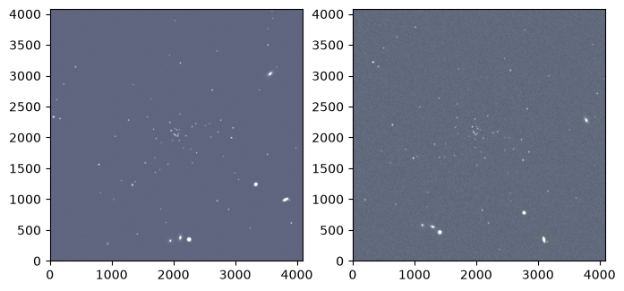
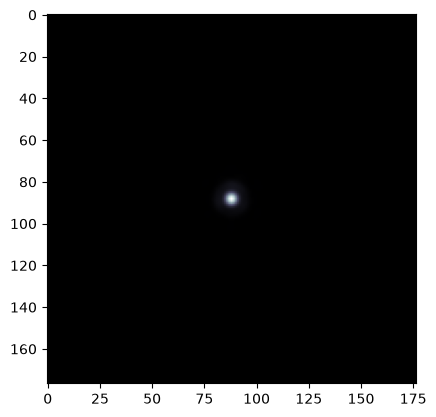

STIPS Tutorial#
Kernel Information and Read-Only Status#
To run this notebook, please select “Roman Research Nexus {VERSION}” kernel at the top right of your window. For example “Roman Research Nexus 2026.1”.
This notebook is read-only. You can run cells and make edits, but you must save changes to a different location. We recommend saving the notebook within your home directory, or to a new folder within your home (e.g. file > save notebook as > my-nbs/nb.ipynb). Note that a directory must exist before you attempt to add a notebook to it.
Introduction#
STIPS, or the Space Telescope Imaging Product Simulator, is a tool developed by STScI for simulating observations of astronomical scenes with the Roman Wide Field Instrument (WFI). Detailed documentation of the tool is available on the RDox pages.
STIPS can generate images of the entire WFI array, which consists of 18 detectors, also called Sensor Chip Assemblies (SCAs). For more information on the WFI detectors and focal plane array please see the RDox documentation. STIPS depends on the Pandeia Exposure time calculator and the STPSF point spread function (PSF) generator to create these simulations. Tutorial notebooks for both Pandeia and STPSF are also available. Users can choose to simulate between 1 and 18 SCAs in any of the WFI imaging filters, insert any number of point or extended sources, and specify a sky background estimate. STIPS will scale input fluxes to observed values, retrieve appropriate PSFs (interpolated to the positions of the sources), and add in additional noise terms.
As described in the Caveats to Using STIPS for Roman, neither pixel saturation nor non-linearity residuals are currently supported.
This notebook is a starter guide to simulating and manipulating scenes with STIPS.
Reference Data#
The cell below will check to ensure ancillary reference files for stips and pandeia packages are installed. If not, it will download the ancillary reference files and install them under your home directory (i.e., ${HOME}/refdata/).
Local Run Settings#
If you want to run the notebook in your local machine, refer to the information in local installation instructions before proceeding with the notebook. The instructions provide important information about setting up your environment, installing dependencies, and adding to your working directory scripts to help with the reference data installation.
Depending on which (if any) reference data are missing, this cell may take several minutes to execute.
On the Roman Research Nexus#
If you are working on the Nexus, then the ancillary reference data are pre-installed and this cell will execute instantly.
import os
import sys
import importlib.util
import notebook_data_dependencies as ndd
# Download reference data (if necessary)
result = ndd.install_files(packages=['stips', 'stpsf', 'pandeia_data', 'pandeia_psf', 'synphot'])
ndd.setup_env(result)
Did not find pandeia_data data in environment, setting it up...
Downloading and uncompressing file...
Found 1 data URL(s) to download and install...
Working on file 1 out of 1
Update environment variable with the following:
export pandeia_refdata='/home/runner/refdata/pandeia_data-2026.1-roman'
Did not find pandeia_psf data in environment, setting it up...
Downloading and uncompressing file...
Found 1 data URL(s) to download and install...
Working on file 1 out of 1
Update environment variable with the following:
export PSF_DIR='/home/runner/refdata/pandeia_psfs-2026.1-roman'
Did not find stpsf data in environment, setting it up...
Downloading and uncompressing file...
Found 1 data URL(s) to download and install...
Working on file 1 out of 1
Update environment variable with the following:
export STPSF_PATH='/home/runner/refdata/stpsf-data'
Did not find stips data in environment, setting it up...
Downloading and uncompressing file...
Found 1 data URL(s) to download and install...
Working on file 1 out of 1
Update environment variable with the following:
export stips_data='/home/runner/refdata/stips_data'
Did not find synphot data in environment, setting it up...
Downloading and uncompressing file...
Found 9 data URL(s) to download and install...
Working on file 1 out of 9
Working on file 2 out of 9
Working on file 3 out of 9
Working on file 4 out of 9
Working on file 5 out of 9
Working on file 6 out of 9
Working on file 7 out of 9
Working on file 8 out of 9
Working on file 9 out of 9
Update environment variable with the following:
export PYSYN_CDBS='/home/runner/refdata/grp/redcat/trds/'
Reference data paths set to:
pandeia_refdata = /home/runner/refdata/pandeia_data-2026.1-roman
PSF_DIR = /home/runner/refdata/pandeia_psfs-2026.1-roman
STPSF_PATH = /home/runner/refdata/stpsf-data
stips_data = /home/runner/refdata/stips_data
PYSYN_CDBS = /home/runner/refdata/grp/redcat/trds/
CRDS_SERVER_URL = https://roman-crds.stsci.edu (pre-set, not overwritten)
CRDS_CONTEXT = roman-edit (pre-set, not overwritten)
CRDS_OBSERVATORY = roman
CRDS_PATH = /home/runner/crds_cache (pre-set, not overwritten)
Imports#
Besides the STIPS-related imports, the matplotlib imports will help visualize simulated images and astropy.io.fits will help write a FITS table on the fly.
import matplotlib as mpl
import matplotlib.pyplot as plt
import stips
import yaml
from astropy.io import fits
from stips.astro_image import AstroImage
from stips.observation_module import ObservationModule
from stips.scene_module import SceneModule
Environment report#
To verify the existing STIPS installation alongside its associated data files and dependencies, run the cell below. (Find the current software requirements in the STIPS documentation.)
print(stips.__env__report__)
STIPS Version 2.3.1 with Data Version 1.0.10 at /home/runner/refdata/stips_data.
STIPS Grid Generated with STIPS Version 1.1.0.
Pandeia Version 2026.2 with Data Version 2026.1 at /home/runner/refdata/pandeia_data-2026.1-roman and PSF Version 2026.1 at /home/runner/refdata/pandeia_psfs-2026.1-roman.
stpsf Version 2.2.0 with Data Version 2.2.0 at /home/runner/refdata/stpsf-data.
Examples#
Basic STIPS Usage#
This tutorial builds on the concepts introduced in the STIPS Overview article and is designed to walk through the phases of using STIPS at the most introductory level: creating a small scene, designing an observation, and generating a simulated image.
At its most fundamental level, STIPS takes a dictionary of observation and instrument parameters and a source catalog in order to return a simulated image. The source catalog can be either a user-defined input catalog in FITS format or it can be simulated using the STIPS SceneModule class (see below).
In this example, we start by specifying an observation dictionary for an image taken with the F129 filter, using the Detector 1 (WFI01), and with an exposure time of 300 seconds.
Note: We first need to update the path to the PSF cache using a YAML configuration file. A patch to fix the setting of this path in STIPS module calls will be released in the near future.
fix = {'psf_cache_location': os.environ["HOME"]}
with open('./stips_config.yaml', 'w') as file:
yaml.dump(fix, file)
Now we set up the observation dictionary:
obs = {'instrument': 'WFI', 'filters': ['F129'], 'detectors': 1,
'background': 'pandeia', 'observations_id': 42, 'exptime': 300,
'offsets': [{'offset_id': 1, 'offset_centre': False, 'offset_ra': 0.0,
'offset_dec': 0.0, 'offset_pa': 0.0}]
}
Then we feed the dictionary to an instance of the ObservationModule class, while also specifying the central coordinates (90 degrees right ascension and 30 degrees declination) and position angle (0 degrees) as keyword arguments.
obm = ObservationModule(obs, ra=90, dec=30, pa=0, seed=42, cores=6)
2026-07-22 22:15:10,498 INFO: Got offsets as [{'offset_id': 1, 'offset_centre': False, 'offset_ra': 0.0, 'offset_dec': 0.0, 'offset_pa': 0.0}]
2026-07-22 22:15:10,530 INFO: Adding observation with filter F129 and offset (0.0,0.0,0.0)
2026-07-22 22:15:10,531 INFO: Added 1 observations
2026-07-22 22:15:10,779 INFO: WFI with 1 detectors. Central offset (np.float64(2.065830864204697e-13), np.float64(-8.945310041616143e-14), 0)
Create a Simple Astronomical Scene#
The other requirement is an input source catalog. In this case, we generate and input a user-defined catalog. STIPS accepts several types of tables and catalogs in either the IPAC text or FITS BinTable format. This example uses a Mixed Catalog, which requires the following columns:
id: Object IDra: Right ascension (RA), in degreesdec: Declination (DEC), in degreesflux: Flux, inunits(defined below)type: Approximation used to profile a source. Options are'sersic'(for extended sources) orpointn: Sersic profile indexphi: Position angle of the Sersic profle’s major axis, in degreesratio: Ratio of the Sersic profile’s major and minor axesSince
n,phi,ratioonly apply to extended sources, they are ignored in rows wheretypeis set to'point'.
notes: Optional per-source commentsunits: One of‘p’for photons/s,‘e’for electrons/s,‘j’for Jansky, or‘c’for counts/s
Below, we create a catalog containing two sources located near the central coordinates specified in the ObservationModule.
cols = [
fits.Column(name='id', array=[1, 2], format='K'),
fits.Column(name='ra', array=[90.02, 90.03], format='D'),
fits.Column(name='dec', array=[29.98, 29.97], format='D'),
fits.Column(name='flux', array=[0.00023, 0.0004], format='D'),
fits.Column(name='type', array=['point', 'point'], format='8A'),
fits.Column(name='n', array=[0, 0], format='D'),
fits.Column(name='re', array=[0, 0], format='D'),
fits.Column(name='phi', array=[0, 0], format='D'),
fits.Column(name='ratio', array=[0, 0], format='D'),
fits.Column(name='notes', array=['', ''], format='8A'),
fits.Column(name='units', array=['j', 'j'], format='8A')
]
Next, we save the columns as a FITS table in the BinTable format and assign header keys that specify the filter and catalog type:
hdut = fits.BinTableHDU.from_columns(cols)
hdut.header['TYPE'] = 'mixed'
hdut.header['FILTER'] = 'F129'
And we save the catalog locally:
cat_file = 'catalog.fits'
hdut.writeto(cat_file, overwrite=True)
Simulate an Image#
With the observation module and source catalog in tow, STIPS can take over the image simulation process. First, we trigger the initialization of a new observation:
obm.nextObservation()
2026-07-22 22:15:10,809 INFO: Initializing Observation 0 of 1
2026-07-22 22:15:10,809 INFO: Observation Filter is F129
2026-07-22 22:15:10,810 INFO: Observation (RA,DEC) = (90.0,30.0) with PA=0.0
2026-07-22 22:15:10,810 INFO: Resetting
2026-07-22 22:15:11,049 INFO: Returning background 0.10970060309254233 for 'pandeia'
2026-07-22 22:15:11,050 INFO: Creating Detector WFI01 with (RA,DEC,PA) = (90.0,30.0,0.0)
2026-07-22 22:15:11,050 INFO: Creating Detector WFI01 with offset (0.0,0.0)
2026-07-22 22:15:11,061 INFO: Creating Instrument with Configuration {'aperture': 'imaging', 'detector': 'wfi01', 'disperser': None, 'filter': 'f129', 'instrument': 'wfi', 'mode': 'imaging'}
2026-07-22 22:15:11,092 INFO: WFI01: (RA, DEC, PA) := (90.0, 30.0, 0.0), detected as (90.0, 30.0, 0.0)
2026-07-22 22:15:11,093 INFO: Detector WFI01 created
2026-07-22 22:15:11,094 INFO: Reset Instrument
Creating pandeia instrument roman.wfi.imaging
0
Next, we simulate an image containing the sources from the catalog we created earlier. Then, we add error residuals to the image:
cat_name = obm.addCatalogue(cat_file)
2026-07-22 22:15:11,101 INFO: Running catalogue catalog.fits
2026-07-22 22:15:11,101 INFO: Adding catalogue catalog.fits
2026-07-22 22:15:11,110 INFO: Converting mixed catalogue
2026-07-22 22:15:11,110 INFO: Preparing output table
2026-07-22 22:15:11,125 INFO: Converting chunk 2
2026-07-22 22:15:11,135 INFO: Finished converting catalogue to internal format
2026-07-22 22:15:11,136 INFO: Adding catalogue to detector WFI01
2026-07-22 22:15:11,136 INFO: Adding catalogue catalog_42_conv_F129.fits to AstroImage WFI01
2026-07-22 22:15:11,156 INFO: Determining pixel co-ordinates
2026-07-22 22:15:11,157 INFO: Keeping 2 items
2026-07-22 22:15:11,158 INFO: Writing 2 stars
2026-07-22 22:15:11,159 INFO: Adding 2 point sources to AstroImage WFI01
2026-07-22 22:15:11,165 INFO: PSF File psf_WFI_2.3.1_F129_wfi01.fits to be put at /home/runner/psf_cache
2026-07-22 22:15:11,166 INFO: PSF File is /home/runner/psf_cache/psf_WFI_2.3.1_F129_wfi01.fits
2026-07-22 22:15:11,934 INFO: Adding point source 1 to AstroImage 2631.9672457028046,1410.503966182148
2026-07-22 22:15:11,945 INFO: Adding point source 2 to AstroImage 2915.5365753799083,1083.2929624680437
2026-07-22 22:15:11,970 INFO: Added catalogue catalog_42_conv_F129.fits to AstroImage WFI01
2026-07-22 22:15:11,971 INFO: Finished catalogue catalog.fits
obm.addError()
2026-07-22 22:15:11,976 INFO: Adding Error
2026-07-22 22:15:11,977 INFO: Adding residual error
2026-07-22 22:15:12,006 INFO: WFI01: (RA, DEC, PA) := (0.0, 0.0, 0.0), detected as (0.0, 0.0, 0.0)
2026-07-22 22:15:12,251 INFO: WFI01: (RA, DEC, PA) := (0.0, 0.0, 0.0), detected as (0.0, 0.0, 0.0)
2026-07-22 22:15:12,252 INFO: Created AstroImage WFI01 and imported data from FITS file err_flat_wfi.fits
2026-07-22 22:15:12,283 INFO: WFI01: (RA, DEC, PA) := (0.0, 0.0, 0.0), detected as (0.0, 0.0, 0.0)
2026-07-22 22:15:12,543 INFO: WFI01: (RA, DEC, PA) := (0.0, 0.0, 0.0), detected as (0.0, 0.0, 0.0)
2026-07-22 22:15:12,543 INFO: Created AstroImage WFI01 and imported data from FITS file err_rdrk_wfi.fits
2026-07-22 22:15:12,548 INFO: Adding error to detector WFI01
2026-07-22 22:15:12,548 INFO: Adding background
2026-07-22 22:15:12,740 INFO: Returning background 0.10970060309254233 for 'pandeia'
2026-07-22 22:15:12,741 INFO: Background is 0.10970060309254233 counts/s/pixel
2026-07-22 22:15:12,926 INFO: Returning background 0.10970060309254233 for 'pandeia'
2026-07-22 22:15:12,927 INFO: Added background of 0.10970060309254233 counts/s/pixel
2026-07-22 22:15:12,941 INFO: Inserting correct exposure time
2026-07-22 22:15:12,945 INFO: Cropping Down to base Detector Size
2026-07-22 22:15:12,946 INFO: Cropping convolved image down to detector size
2026-07-22 22:15:12,946 INFO: Taking [22:4110, 22:4110]
2026-07-22 22:15:12,955 INFO: WFI01: (RA, DEC, PA) := (90.0, 30.0, 0.0), detected as (90.0, 30.0, 0.0)
2026-07-22 22:15:12,956 INFO: Adding poisson noise
2026-07-22 22:15:13,415 INFO: Adding Poisson Noise with mean 0.00041581712372814624 and standard deviation 5.745736976603026
2026-07-22 22:15:13,417 INFO: Adding readnoise
2026-07-22 22:15:13,819 INFO: Adding readnoise with mean 0.0006565025541931391 and STDEV 12.00109577178955
2026-07-22 22:15:13,820 INFO: Adding flatfield residual
2026-07-22 22:15:13,857 INFO: Adding Flatfield residual with mean 1.0097910165786743 and standard deviation 0.0006765797734260559
2026-07-22 22:15:13,857 INFO: Adding dark residual
2026-07-22 22:15:13,893 INFO: Adding Dark residual with mean 0.20807769894599915 and standard deviation 1.1006208658218384
2026-07-22 22:15:13,894 INFO: Adding cosmic ray residual
2026-07-22 22:15:14,740 INFO: Adding Cosmic Ray residual with mean 0.0847659632563591 and standard deviation 1.9229004383087158
2026-07-22 22:15:14,744 INFO: Finished adding error
2026-07-22 22:15:14,746 INFO: Finished Adding Error
We finish by saving the outputs to a FITS file. The finalize() method of the ObservationModule object can also return a full field of view mosaic and a list of the simulation’s initial parameters.
fits_file_1, _, params_1 = obm.finalize(mosaic=False)
print(f"Output FITS file is {fits_file_1}")
2026-07-22 22:15:14,751 INFO: Converting to FITS file
2026-07-22 22:15:14,752 INFO: Converting detector WFI01 to FITS extension
2026-07-22 22:15:14,753 INFO: Creating Extension HDU from AstroImage WFI01
2026-07-22 22:15:14,755 INFO: Created Extension HDU from AstroImage WFI01
2026-07-22 22:15:14,780 INFO: Created FITS file /home/runner/work/roman_notebooks/roman_notebooks/notebooks/stips/sim_42_0.fits
Output FITS file is /home/runner/work/roman_notebooks/roman_notebooks/notebooks/stips/sim_42_0.fits
for prm in params_1:
print(prm)
Instrument: WFI
Filters: F129
Pixel Scale: (0.110,0.110) arcsec/pix
Pivot Wavelength: 1.290 um
Background Type: Pandeia background rate
Exposure Time: 300.0s
Input Unit: counts/s
Added Flatfield Residual: True
Added Dark Current Residual: True
Added Cosmic Ray Residual: True
Added Readnoise: True
Added Poisson Noise: True
Detector X size: 4088
Detector Y size: 4088
Random Seed: 42
img_1 = fits.getdata(fits_file_1)[1000:1500, 2500:3000]
plt.imshow(img_1, vmax=1.5, origin='lower', cmap='bone')
<matplotlib.image.AxesImage at 0x7fe216287f50>
Generate Scenes Using STIPS Built-In Functions#
STIPS can simulate scenes by importing pre-existing catalogs (as in the first example) or by using built-in functionality that generates collections of stars or galaxies based on user-specified parameters. Below, we will use the STIPS SceneModule to generate a stellar population and a galactic population.
First, we specify a set of parameters that will be used in both scenes (RA, DEC, ID) and initialize two SceneModule instances, one for the stellar population and one for the galaxy population:
obs_prefix_1 = 'notebook_example1'
obs_ra = 150.0
obs_dec = -2.5
scm_stellar = SceneModule(out_prefix=obs_prefix_1, ra=obs_ra, dec=obs_dec)
scm_galactic = SceneModule(out_prefix=obs_prefix_1, ra=obs_ra, dec=obs_dec)
Log level: INFO
Log level: INFO
Create a Stellar Population#
Now we create a dictionary containing the parameters of the desired stellar population to pass to the SceneModule instance’s CreatePopulation() method. The following parameters are needed to define a stellar population:
Number of point sources
Upper and lower limit of the age of the stars (in years)
Upper and lower limit of the metallicity of the stars
Initial Mass Function
Binary fraction
Clustering (True/False)
Distribution type (Uniform, Inverse power-law)
Total radius of the population
Distance from the population
Offset RA and DEC from the center of the scene being created
A full accounting of each dictionary entry’s meaning can be found in the docstring of the CreatePopulation() method:
scm_stellar.CreatePopulation?
stellar_parameters = {'n_stars': 100, 'age_low': 7.5e12, 'age_high': 7.5e12,
'z_low': -2.0, 'z_high': -2.0, 'imf': 'salpeter',
'alpha': -2.35, 'binary_fraction': 0.1,
'distribution': 'invpow', 'clustered': True,
'radius': 100.0, 'radius_units': 'pc',
'distance_low': 20.0, 'distance_high': 20.0,
'offset_ra': 0.0, 'offset_dec': 0.0
}
We pass the dictionary to the stellar SceneModule instance’s CreatePopulation() method. Running the method will save the newly-generated population locally.
stellar_cat_file = scm_stellar.CreatePopulation(stellar_parameters)
print(f"Stellar population saved to file {stellar_cat_file}")
2026-07-22 22:15:15,054 INFO: Creating catalogue /home/runner/work/roman_notebooks/roman_notebooks/notebooks/stips/notebook_example1_stars_000.fits
2026-07-22 22:15:15,055 INFO: Creating age and metallicity numbers
2026-07-22 22:15:15,055 INFO: Created age and metallicity numbers
2026-07-22 22:15:15,056 INFO: Creating stars
2026-07-22 22:15:15,056 INFO: Age 1.35e+10
2026-07-22 22:15:15,057 INFO: Metallicity -2.000000
2026-07-22 22:15:15,057 INFO: Creating 100 stars
2026-07-22 22:15:15,387 INFO: Creating 100 objects, max radius 100.0, function invpow, scale 2.8
2026-07-22 22:15:15,443 INFO: Chunk 1: 115 stars
2026-07-22 22:15:15,457 INFO: Done creating catalogue
Stellar population saved to file /home/runner/work/roman_notebooks/roman_notebooks/notebooks/stips/notebook_example1_stars_000.fits
Create a Galactic Population#
Repeat the population generation process, now by creating a dictionary containing parameters of a desired galactic population. The following paramters are needed to define a galaxy population:
Number of galaxies
Upper and lower limit of the redshift
Upper and lower limit of the galactic radii
Range of V-band surface brightness magnitudes
Clustering (True/False)
Distribution type (Uniform, Inverse power-law)
Radius of the distribution
Offset RA and DEC from the center of the scene being created
A full accounting of each dictionary entry’s meaning can be found in the docstring of the CreateGalaxies() method:
scm_galactic.CreateGalaxies?
We pass the dictionary to the galaxy SceneModule instance’s CreateGalaxies() method, and save the result locally:
galaxy_parameters = {'n_gals': 10, 'z_low': 0.0, 'z_high': 0.2,
'rad_low': 0.01, 'rad_high': 2.0,
'sb_v_low': 30.0, 'sb_v_high': 25.0,
'distribution': 'uniform', 'clustered': False,
'radius': 200.0, 'radius_units': 'arcsec',
'offset_ra': 0.0, 'offset_dec': 0.0
}
galaxy_cat_file = scm_galactic.CreateGalaxies(galaxy_parameters)
print(f"Galaxy population saved to file {galaxy_cat_file}")
2026-07-22 22:15:15,473 INFO: Creating catalogue /home/runner/work/roman_notebooks/roman_notebooks/notebooks/stips/notebook_example1_gals_000.fits
2026-07-22 22:15:15,473 INFO: Wrote preamble
2026-07-22 22:15:15,473 INFO: Parameters are: {'n_gals': 10, 'z_low': 0.0, 'z_high': 0.2, 'rad_low': 0.01, 'rad_high': 2.0, 'sb_v_low': 30.0, 'sb_v_high': 25.0, 'distribution': 'uniform', 'clustered': False, 'radius': 200.0, 'radius_units': 'arcsec', 'offset_ra': 0.0, 'offset_dec': 0.0}
2026-07-22 22:15:15,475 INFO: Making Co-ordinates
2026-07-22 22:15:15,475 INFO: Creating 10 objects, max radius 200.0, function uniform, scale 2.8
2026-07-22 22:15:15,475 INFO: Converting Co-ordinates into RA,DEC
2026-07-22 22:15:15,488 INFO: Done creating catalogue
Galaxy population saved to file /home/runner/work/roman_notebooks/roman_notebooks/notebooks/stips/notebook_example1_gals_000.fits
Set up an Observation (First Pointing)#
Once we’ve created a scene, we can use STIPS to simulate as many exposures of it in as many orientations as we’d like. In STIPS, a single telescope pointing is called an offset, and a collection of exposures is an observation.
We start this subsection by creating a single offset that is dithered by 2 degrees in right ascension and rotated by 0.5 degrees in position angle from the center of the scene.
offset_1 = {'offset_id': 1, 'offset_centre': False,
# True would center each detector on the same on-sky point
'offset_ra': 2.0, 'offset_dec': 0.0, 'offset_pa': 0.5
}
The offset information is contained within an observation that is taken with the F129 filter, uses detectors WFI01 through WFI03, and has an exposure time of 1500 seconds. We also apply distortion and specify a sky background of 0.24 counts/s/pixel.
observation_parameters_1 = {'instrument': 'WFI', 'filters': ['F129'],
'detectors': 3, 'distortion': True,
'background': 0.24, 'observations_id': 1,
'exptime': 1500, 'offsets': [offset_1]
}
STIPS can also apply various types of error residuals to the observation. Here, we only include residuals from flat-fields and the dark current.
residuals_1 = {'residual_flat': True, 'residual_dark': True,
'residual_cosmic': False, 'residual_poisson': False,
'residual_readnoise': False
}
Next, we feed the observation dictionary to an instance of the ObservationModule class, alongside the observation ID, right ascension, and declination specified earlier in this example.
obm_1 = ObservationModule(observation_parameters_1, residual=residuals_1,
out_prefix=obs_prefix_1, ra=obs_ra, dec=obs_dec)
2026-07-22 22:15:15,509 INFO: Got offsets as [{'offset_id': 1, 'offset_centre': False, 'offset_ra': 2.0, 'offset_dec': 0.0, 'offset_pa': 0.5}]
2026-07-22 22:15:15,530 INFO: Adding observation with filter F129 and offset (2.0,0.0,0.5)
2026-07-22 22:15:15,531 INFO: Added 1 observations
2026-07-22 22:15:15,721 INFO: WFI with 3 detectors. Central offset (np.float64(1.7907664211548176e-13), np.float64(-8.945310041616143e-14), 0)
We call the ObservationModule object’s nextObservation() method to move to the first offset/filter combination (offset_1 and F129) contained in the object.
obm_1.nextObservation()
2026-07-22 22:15:15,726 INFO: Initializing Observation 0 of 1
2026-07-22 22:15:15,727 INFO: Observation Filter is F129
2026-07-22 22:15:15,727 INFO: Observation (RA,DEC) = (150.00055555555556,-2.5) with PA=0.5
2026-07-22 22:15:15,728 INFO: Resetting
2026-07-22 22:15:15,728 INFO: Returning background 0.24.
2026-07-22 22:15:15,729 INFO: Creating Detector WFI01 with (RA,DEC,PA) = (150.00055555555556,-2.5,0.5)
2026-07-22 22:15:15,730 INFO: Creating Detector WFI01 with offset (0.0,0.0)
2026-07-22 22:15:15,740 INFO: Creating Instrument with Configuration {'aperture': 'imaging', 'detector': 'wfi01', 'disperser': None, 'filter': 'f129', 'instrument': 'wfi', 'mode': 'imaging'}
2026-07-22 22:15:15,877 INFO: WFI01: (RA, DEC, PA) := (150.00055555555556, -2.5, 0.5), detected as (150.00055555555556, -2.5, 0.5000000000001229)
2026-07-22 22:15:15,878 INFO: Detector WFI01 created
2026-07-22 22:15:15,879 INFO: Creating Detector WFI02 with (RA,DEC,PA) = (150.00063361633363,-2.6463679052675504,0.5)
2026-07-22 22:15:15,879 INFO: Creating Detector WFI02 with offset (7.806077806812047e-05,-0.1463679052675503)
2026-07-22 22:15:15,890 INFO: WFI02: (RA, DEC, PA) := (150.00063361633363, -2.6463679052675504, 0.5), detected as (150.00063361633363, -2.6463679052675504, 0.5000000000001229)
2026-07-22 22:15:15,890 INFO: Detector WFI02 created
2026-07-22 22:15:15,891 INFO: Creating Detector WFI03 with (RA,DEC,PA) = (150.00076976694686,-2.777285221181246,0.5)
2026-07-22 22:15:15,891 INFO: Creating Detector WFI03 with offset (0.00021421139128143576,-0.2772852211812461)
2026-07-22 22:15:15,902 INFO: WFI03: (RA, DEC, PA) := (150.00076976694686, -2.777285221181246, 0.5), detected as (150.00076976694686, -2.777285221181246, 0.5000000000001229)
2026-07-22 22:15:15,902 INFO: Detector WFI03 created
2026-07-22 22:15:15,903 INFO: Reset Instrument
Creating pandeia instrument roman.wfi.imaging
0
Now that the observation is fully set up, we add the stellar and galactic populations to it. (Please note that each population may take about a minute to load.)
output_stellar_catalogs_1 = obm_1.addCatalogue(stellar_cat_file)
output_galaxy_catalogs_1 = obm_1.addCatalogue(galaxy_cat_file)
print(f"Output Catalogs are {output_stellar_catalogs_1} and "
f"{output_galaxy_catalogs_1}.")
2026-07-22 22:15:15,909 INFO: Running catalogue /home/runner/work/roman_notebooks/roman_notebooks/notebooks/stips/notebook_example1_stars_000.fits
2026-07-22 22:15:15,910 INFO: Adding catalogue /home/runner/work/roman_notebooks/roman_notebooks/notebooks/stips/notebook_example1_stars_000.fits
2026-07-22 22:15:15,921 INFO: Converting phoenix catalogue
2026-07-22 22:15:15,922 INFO: Preparing output table
2026-07-22 22:15:15,944 INFO: Converting chunk 2
2026-07-22 22:15:15,945 INFO: Converting Phoenix Table to Internal format
2026-07-22 22:15:15,945 INFO: 1 datasets
2026-07-22 22:15:16,273 INFO: Finished converting catalogue to internal format
2026-07-22 22:15:16,273 INFO: Adding catalogue to detector WFI01
2026-07-22 22:15:16,274 INFO: Adding catalogue notebook_example1_stars_000_01_conv_F129.fits to AstroImage WFI01
2026-07-22 22:15:16,296 INFO: Determining pixel co-ordinates
2026-07-22 22:15:16,296 INFO: Keeping 73 items
2026-07-22 22:15:16,297 INFO: Writing 73 stars
2026-07-22 22:15:16,298 INFO: Adding 73 point sources to AstroImage WFI01
2026-07-22 22:15:16,304 INFO: PSF File psf_WFI_2.3.1_F129_wfi01.fits to be put at /home/runner/psf_cache
2026-07-22 22:15:16,305 INFO: PSF File is /home/runner/psf_cache/psf_WFI_2.3.1_F129_wfi01.fits
2026-07-22 22:15:17,077 INFO: Adding point source 1 to AstroImage 2022.8992518431126,2083.548577454976
2026-07-22 22:15:17,089 INFO: Adding point source 2 to AstroImage 2119.1468094004645,1974.4098786516147
2026-07-22 22:15:17,101 INFO: Adding point source 3 to AstroImage 2043.3959331341841,2166.537745706759
2026-07-22 22:15:17,113 INFO: Adding point source 4 to AstroImage 2078.170455849279,2145.4099047891577
2026-07-22 22:15:17,125 INFO: Adding point source 5 to AstroImage 2103.379762380521,2076.256913536127
2026-07-22 22:15:17,136 INFO: Adding point source 6 to AstroImage 2298.900308946779,1833.1705877169256
2026-07-22 22:15:17,148 INFO: Adding point source 7 to AstroImage 1743.9829456895106,2004.8944343941967
2026-07-22 22:15:17,160 INFO: Adding point source 8 to AstroImage 2386.3860099506064,2246.355387806953
2026-07-22 22:15:17,171 INFO: Adding point source 9 to AstroImage 2046.836178495134,2065.1585094272887
2026-07-22 22:15:17,183 INFO: Adding point source 10 to AstroImage 1966.7958220697794,2265.5361364519995
2026-07-22 22:15:17,195 INFO: Adding point source 11 to AstroImage 1723.8816674916548,1691.2676492792705
2026-07-22 22:15:17,206 INFO: Adding point source 12 to AstroImage 1565.148644598532,1609.8867626374667
2026-07-22 22:15:17,218 INFO: Adding point source 13 to AstroImage 1934.619639686009,1587.24080333585
2026-07-22 22:15:17,229 INFO: Adding point source 14 to AstroImage 1730.7565318956465,1453.592357183893
2026-07-22 22:15:17,241 INFO: Adding point source 15 to AstroImage 2607.977522284875,2246.3562461321676
2026-07-22 22:15:17,252 INFO: Adding point source 16 to AstroImage 1600.9570597428883,2354.9572626308236
2026-07-22 22:15:17,264 INFO: Adding point source 17 to AstroImage 2629.613721208135,2027.5618989495863
2026-07-22 22:15:17,276 INFO: Adding point source 18 to AstroImage 2746.1987803069587,2108.807480415347
2026-07-22 22:15:17,287 INFO: Adding point source 19 to AstroImage 2326.1011114492503,2194.6825653025066
2026-07-22 22:15:17,299 INFO: Adding point source 20 to AstroImage 2094.2856492279457,2044.4538222496908
2026-07-22 22:15:17,310 INFO: Adding point source 21 to AstroImage 2004.8951078840257,1973.2460688554781
2026-07-22 22:15:17,322 INFO: Adding point source 22 to AstroImage 1403.5663485439395,1305.1999903646163
2026-07-22 22:15:17,334 INFO: Adding point source 23 to AstroImage 1825.6109078382963,1936.9547315168409
2026-07-22 22:15:17,345 INFO: Adding point source 24 to AstroImage 1959.566261504318,3358.6381711889308
2026-07-22 22:15:17,357 INFO: Adding point source 25 to AstroImage 1986.6983530857171,2132.040758665193
2026-07-22 22:15:17,369 INFO: Adding point source 26 to AstroImage 2130.7516831682906,2403.842975469995
2026-07-22 22:15:17,381 INFO: Adding point source 27 to AstroImage 2180.392583243785,1855.225288223442
2026-07-22 22:15:17,392 INFO: Adding point source 28 to AstroImage 2790.95579789985,2301.0652086402297
2026-07-22 22:15:17,403 INFO: Adding point source 29 to AstroImage 1817.263581707047,863.3233356173901
2026-07-22 22:15:17,415 INFO: Adding point source 30 to AstroImage 2331.033976800407,1609.7682756504882
2026-07-22 22:15:17,426 INFO: Adding point source 31 to AstroImage 2915.6695024484816,855.2080068791665
2026-07-22 22:15:17,438 INFO: Adding point source 32 to AstroImage 3415.3044983380714,2792.4908918606784
2026-07-22 22:15:17,450 INFO: Adding point source 33 to AstroImage 2226.131844071046,2048.1898902052535
2026-07-22 22:15:17,461 INFO: Adding point source 34 to AstroImage 1804.5063112265725,1500.285143461313
2026-07-22 22:15:17,473 INFO: Adding point source 35 to AstroImage 1080.3425131918866,2040.6343048422575
2026-07-22 22:15:17,484 INFO: Adding point source 36 to AstroImage 2651.8625511967684,2791.6712973849367
2026-07-22 22:15:17,496 INFO: Adding point source 37 to AstroImage 1055.963500451275,1015.6082288113648
2026-07-22 22:15:17,508 INFO: Adding point source 38 to AstroImage 815.3347661132652,1584.2917477907645
2026-07-22 22:15:17,519 INFO: Adding point source 39 to AstroImage 3080.8271663974683,1340.6976260967322
2026-07-22 22:15:17,531 INFO: Adding point source 40 to AstroImage 2989.233285071846,2177.48844829344
2026-07-22 22:15:17,542 INFO: Adding point source 41 to AstroImage 1905.6751023038355,643.0537946601719
2026-07-22 22:15:17,554 INFO: Adding point source 42 to AstroImage 1435.6427870999337,457.22147131053475
2026-07-22 22:15:17,565 INFO: Adding point source 43 to AstroImage 1701.934738134063,2156.247841689336
2026-07-22 22:15:17,577 INFO: Adding point source 44 to AstroImage 130.73731802466295,2633.3448930881023
2026-07-22 22:15:17,588 INFO: Adding point source 45 to AstroImage 4008.734641284578,1853.0672106353015
2026-07-22 22:15:17,600 INFO: Adding point source 46 to AstroImage 3267.7736473829827,550.2364330474184
2026-07-22 22:15:17,611 INFO: Adding point source 47 to AstroImage 2834.316063550922,1716.0002282032367
2026-07-22 22:15:17,623 INFO: Adding point source 48 to AstroImage 3555.8864205848963,3521.17522513782
2026-07-22 22:15:17,634 INFO: Adding point source 49 to AstroImage 3696.8229157737296,3165.229562488077
2026-07-22 22:15:17,646 INFO: Adding point source 50 to AstroImage 2070.9492528240103,2047.453982236455
2026-07-22 22:15:17,657 INFO: Adding point source 51 to AstroImage 2538.212529764976,2211.003375691511
2026-07-22 22:15:17,668 INFO: Adding point source 52 to AstroImage 3631.0558535669534,3952.794463010967
2026-07-22 22:15:17,680 INFO: Adding point source 53 to AstroImage 185.7144121069109,2326.8590324962515
2026-07-22 22:15:17,692 INFO: Adding point source 54 to AstroImage 2396.701797877598,1772.1644381313245
2026-07-22 22:15:17,703 INFO: Adding point source 55 to AstroImage 1358.040997213905,1253.0937970628354
2026-07-22 22:15:17,714 INFO: Adding point source 56 to AstroImage 80.21819720509484,2354.1804580776416
2026-07-22 22:15:17,726 INFO: Adding point source 57 to AstroImage 3933.0851016673896,636.1120713570392
2026-07-22 22:15:17,738 INFO: Adding point source 58 to AstroImage 2728.065666989224,3423.252936058774
2026-07-22 22:15:17,749 INFO: Adding point source 59 to AstroImage 1180.250743659038,1325.1332090538674
2026-07-22 22:15:17,761 INFO: Adding point source 60 to AstroImage 2118.4296977584804,2146.119222727189
2026-07-22 22:15:17,772 INFO: Adding point source 61 to AstroImage 840.9319441774824,1125.9059019776012
2026-07-22 22:15:17,784 INFO: Adding point source 62 to AstroImage 3015.6651405199195,1447.9846239014923
2026-07-22 22:15:17,796 INFO: Adding point source 63 to AstroImage 3903.5075982370063,1009.1696506683106
2026-07-22 22:15:17,807 INFO: Adding point source 64 to AstroImage 3551.4833053765183,3784.1859587107956
2026-07-22 22:15:17,819 INFO: Adding point source 65 to AstroImage 245.5705908167174,2887.8162505794885
2026-07-22 22:15:17,831 INFO: Adding point source 66 to AstroImage 1295.3690858358977,2303.380609675183
2026-07-22 22:15:17,843 INFO: Adding point source 67 to AstroImage 3621.664856134995,4065.890013458714
2026-07-22 22:15:17,855 INFO: Adding point source 68 to AstroImage 1374.702198331596,2875.6049848913067
2026-07-22 22:15:17,866 INFO: Adding point source 69 to AstroImage 437.1695527060035,3165.167732630536
2026-07-22 22:15:17,878 INFO: Adding point source 70 to AstroImage 2047.8242676770974,3915.3569091974086
2026-07-22 22:15:17,889 INFO: Adding point source 71 to AstroImage 2133.7955848175147,3229.3502476666863
2026-07-22 22:15:17,901 INFO: Adding point source 72 to AstroImage 3546.7518921933442,1750.253470134226
2026-07-22 22:15:17,913 INFO: Adding point source 73 to AstroImage 2963.294557056263,2017.5418743148534
2026-07-22 22:15:17,940 INFO: Added catalogue notebook_example1_stars_000_01_conv_F129.fits to AstroImage WFI01
2026-07-22 22:15:17,941 INFO: Adding catalogue to detector WFI02
2026-07-22 22:15:17,941 INFO: Adding catalogue notebook_example1_stars_000_01_conv_F129.fits to AstroImage WFI02
2026-07-22 22:15:17,963 INFO: Determining pixel co-ordinates
2026-07-22 22:15:17,964 INFO: Keeping 8 items
2026-07-22 22:15:17,965 INFO: Writing 8 stars
2026-07-22 22:15:17,966 INFO: Adding 8 point sources to AstroImage WFI02
2026-07-22 22:15:17,972 INFO: PSF File psf_WFI_2.3.1_F129_wfi02.fits to be put at /home/runner/psf_cache
2026-07-22 22:15:17,972 INFO: PSF File is /home/runner/psf_cache/psf_WFI_2.3.1_F129_wfi02.fits
2026-07-22 22:15:18,736 INFO: Adding point source 1 to AstroImage 2007.5998088634713,2940.710443477371
2026-07-22 22:15:18,748 INFO: Adding point source 2 to AstroImage 1052.5173381290435,3792.498195319599
2026-07-22 22:15:18,760 INFO: Adding point source 3 to AstroImage 3492.993727742968,3540.0134760852225
2026-07-22 22:15:18,772 INFO: Adding point source 4 to AstroImage 822.6923361263646,2760.104885199142
2026-07-22 22:15:18,784 INFO: Adding point source 5 to AstroImage 2307.8629852065214,3733.1857183676802
2026-07-22 22:15:18,795 INFO: Adding point source 6 to AstroImage 1426.8041648477235,3832.053390453176
2026-07-22 22:15:18,807 INFO: Adding point source 7 to AstroImage 1175.9266080752705,3644.8608742641454
2026-07-22 22:15:18,819 INFO: Adding point source 8 to AstroImage 484.0789043140808,4120.3884034337
2026-07-22 22:15:18,843 INFO: Added catalogue notebook_example1_stars_000_01_conv_F129.fits to AstroImage WFI02
2026-07-22 22:15:18,843 INFO: Adding catalogue to detector WFI03
2026-07-22 22:15:18,844 INFO: Adding catalogue notebook_example1_stars_000_01_conv_F129.fits to AstroImage WFI03
2026-07-22 22:15:18,857 INFO: Determining pixel co-ordinates
2026-07-22 22:15:18,858 INFO: Keeping 0 items
2026-07-22 22:15:18,859 INFO: Added catalogue notebook_example1_stars_000_01_conv_F129.fits to AstroImage WFI03
2026-07-22 22:15:18,860 INFO: Finished catalogue /home/runner/work/roman_notebooks/roman_notebooks/notebooks/stips/notebook_example1_stars_000.fits
2026-07-22 22:15:18,860 INFO: Running catalogue /home/runner/work/roman_notebooks/roman_notebooks/notebooks/stips/notebook_example1_gals_000.fits
2026-07-22 22:15:18,861 INFO: Adding catalogue /home/runner/work/roman_notebooks/roman_notebooks/notebooks/stips/notebook_example1_gals_000.fits
2026-07-22 22:15:18,870 INFO: Converting bc95 catalogue
2026-07-22 22:15:18,870 INFO: Preparing output table
2026-07-22 22:15:18,887 INFO: Converting chunk 2
2026-07-22 22:15:18,887 INFO: Converting BC95 Catalogue
2026-07-22 22:15:18,888 INFO: Normalization Bandpass is johnson,v (<class 'str'>)
2026-07-22 22:15:18,888 INFO: Normalization Bandpass is johnson,v
2026-07-22 22:15:18,899 WARNING: DataConfigurationError: Error loading normalization bandpass: johnson_v EngineInputError("Invalid keys provided: ['johnson_v'] ('johnson_v')")
2026-07-22 22:15:18,929 WARNING: DataConfigurationError: Error loading normalization bandpass: johnson_v EngineInputError("Invalid keys provided: ['johnson_v'] ('johnson_v')")
2026-07-22 22:15:18,957 WARNING: DataConfigurationError: Error loading normalization bandpass: johnson_v EngineInputError("Invalid keys provided: ['johnson_v'] ('johnson_v')")
2026-07-22 22:15:18,986 WARNING: DataConfigurationError: Error loading normalization bandpass: johnson_v EngineInputError("Invalid keys provided: ['johnson_v'] ('johnson_v')")
2026-07-22 22:15:19,015 WARNING: DataConfigurationError: Error loading normalization bandpass: johnson_v EngineInputError("Invalid keys provided: ['johnson_v'] ('johnson_v')")
2026-07-22 22:15:19,044 WARNING: DataConfigurationError: Error loading normalization bandpass: johnson_v EngineInputError("Invalid keys provided: ['johnson_v'] ('johnson_v')")
2026-07-22 22:15:19,073 WARNING: DataConfigurationError: Error loading normalization bandpass: johnson_v EngineInputError("Invalid keys provided: ['johnson_v'] ('johnson_v')")
2026-07-22 22:15:19,102 WARNING: DataConfigurationError: Error loading normalization bandpass: johnson_v EngineInputError("Invalid keys provided: ['johnson_v'] ('johnson_v')")
2026-07-22 22:15:19,131 WARNING: DataConfigurationError: Error loading normalization bandpass: johnson_v EngineInputError("Invalid keys provided: ['johnson_v'] ('johnson_v')")
2026-07-22 22:15:19,159 WARNING: DataConfigurationError: Error loading normalization bandpass: johnson_v EngineInputError("Invalid keys provided: ['johnson_v'] ('johnson_v')")
2026-07-22 22:15:19,188 INFO: Finished converting catalogue to internal format
2026-07-22 22:15:19,188 INFO: Adding catalogue to detector WFI01
2026-07-22 22:15:19,189 INFO: Adding catalogue notebook_example1_gals_000_01_conv_F129.fits to AstroImage WFI01
2026-07-22 22:15:19,215 INFO: Determining pixel co-ordinates
2026-07-22 22:15:19,216 INFO: Keeping 10 items
2026-07-22 22:15:19,216 INFO: Writing 10 galaxies
2026-07-22 22:15:19,217 INFO: Starting Sersic Profiles at Wed Jul 22 22:15:19 2026
2026-07-22 22:15:19,217 INFO: Index is 0
2026-07-22 22:15:21,077 INFO: PSF File psf_WFI_2.3.1_F129_wfi01.fits to be put at /home/runner/psf_cache
2026-07-22 22:15:21,078 INFO: PSF File is /home/runner/psf_cache/psf_WFI_2.3.1_F129_wfi01.fits
2026-07-22 22:15:23,873 INFO: Finished Galaxy 1 of 10
2026-07-22 22:15:23,874 INFO: Index is 1
Step 0 duration in WFI01 with fast_galaxy=False and convolve_galaxy=True: 4.6562 seconds, Running total: 4.6562 seconds
2026-07-22 22:15:26,683 INFO: PSF File psf_WFI_2.3.1_F129_wfi01.fits to be put at /home/runner/psf_cache
2026-07-22 22:15:26,683 INFO: PSF File is /home/runner/psf_cache/psf_WFI_2.3.1_F129_wfi01.fits
2026-07-22 22:15:29,478 INFO: Finished Galaxy 2 of 10
2026-07-22 22:15:29,479 INFO: Index is 2
Step 1 duration in WFI01 with fast_galaxy=False and convolve_galaxy=True: 5.6051 seconds, Running total: 10.2614 seconds
2026-07-22 22:15:32,297 INFO: PSF File psf_WFI_2.3.1_F129_wfi01.fits to be put at /home/runner/psf_cache
2026-07-22 22:15:32,298 INFO: PSF File is /home/runner/psf_cache/psf_WFI_2.3.1_F129_wfi01.fits
2026-07-22 22:15:35,046 INFO: Finished Galaxy 3 of 10
2026-07-22 22:15:35,047 INFO: Index is 3
Step 2 duration in WFI01 with fast_galaxy=False and convolve_galaxy=True: 5.5683 seconds, Running total: 15.8297 seconds
2026-07-22 22:15:37,821 INFO: PSF File psf_WFI_2.3.1_F129_wfi01.fits to be put at /home/runner/psf_cache
2026-07-22 22:15:37,822 INFO: PSF File is /home/runner/psf_cache/psf_WFI_2.3.1_F129_wfi01.fits
2026-07-22 22:15:40,590 INFO: Finished Galaxy 4 of 10
2026-07-22 22:15:40,591 INFO: Index is 4
Step 3 duration in WFI01 with fast_galaxy=False and convolve_galaxy=True: 5.5435 seconds, Running total: 21.3733 seconds
2026-07-22 22:15:42,516 INFO: PSF File psf_WFI_2.3.1_F129_wfi01.fits to be put at /home/runner/psf_cache
2026-07-22 22:15:42,517 INFO: PSF File is /home/runner/psf_cache/psf_WFI_2.3.1_F129_wfi01.fits
2026-07-22 22:15:45,277 INFO: Finished Galaxy 5 of 10
2026-07-22 22:15:45,278 INFO: Index is 5
Step 4 duration in WFI01 with fast_galaxy=False and convolve_galaxy=True: 4.6868 seconds, Running total: 26.0602 seconds
2026-07-22 22:15:47,747 INFO: PSF File psf_WFI_2.3.1_F129_wfi01.fits to be put at /home/runner/psf_cache
2026-07-22 22:15:47,748 INFO: PSF File is /home/runner/psf_cache/psf_WFI_2.3.1_F129_wfi01.fits
2026-07-22 22:15:50,501 INFO: Finished Galaxy 6 of 10
2026-07-22 22:15:50,501 INFO: Index is 6
Step 5 duration in WFI01 with fast_galaxy=False and convolve_galaxy=True: 5.2237 seconds, Running total: 31.2839 seconds
2026-07-22 22:15:52,862 INFO: PSF File psf_WFI_2.3.1_F129_wfi01.fits to be put at /home/runner/psf_cache
2026-07-22 22:15:52,862 INFO: PSF File is /home/runner/psf_cache/psf_WFI_2.3.1_F129_wfi01.fits
2026-07-22 22:15:55,694 INFO: Finished Galaxy 7 of 10
2026-07-22 22:15:55,695 INFO: Index is 7
Step 6 duration in WFI01 with fast_galaxy=False and convolve_galaxy=True: 5.1938 seconds, Running total: 36.4777 seconds
2026-07-22 22:15:58,548 INFO: PSF File psf_WFI_2.3.1_F129_wfi01.fits to be put at /home/runner/psf_cache
2026-07-22 22:15:58,549 INFO: PSF File is /home/runner/psf_cache/psf_WFI_2.3.1_F129_wfi01.fits
2026-07-22 22:16:01,332 INFO: Finished Galaxy 8 of 10
2026-07-22 22:16:01,333 INFO: Index is 8
Step 7 duration in WFI01 with fast_galaxy=False and convolve_galaxy=True: 5.6376 seconds, Running total: 42.1154 seconds
2026-07-22 22:16:03,358 INFO: PSF File psf_WFI_2.3.1_F129_wfi01.fits to be put at /home/runner/psf_cache
2026-07-22 22:16:03,359 INFO: PSF File is /home/runner/psf_cache/psf_WFI_2.3.1_F129_wfi01.fits
2026-07-22 22:16:06,123 INFO: Finished Galaxy 9 of 10
2026-07-22 22:16:06,123 INFO: Index is 9
Step 8 duration in WFI01 with fast_galaxy=False and convolve_galaxy=True: 4.7905 seconds, Running total: 46.9060 seconds
2026-07-22 22:16:08,956 INFO: PSF File psf_WFI_2.3.1_F129_wfi01.fits to be put at /home/runner/psf_cache
2026-07-22 22:16:08,957 INFO: PSF File is /home/runner/psf_cache/psf_WFI_2.3.1_F129_wfi01.fits
2026-07-22 22:16:11,711 INFO: Finished Galaxy 10 of 10
2026-07-22 22:16:11,711 INFO: Finishing Sersic Profiles at Wed Jul 22 22:16:11 2026
2026-07-22 22:16:11,727 INFO: Added catalogue notebook_example1_gals_000_01_conv_F129.fits to AstroImage WFI01
2026-07-22 22:16:11,728 INFO: Adding catalogue to detector WFI02
2026-07-22 22:16:11,728 INFO: Adding catalogue notebook_example1_gals_000_01_conv_F129.fits to AstroImage WFI02
2026-07-22 22:16:11,741 INFO: Determining pixel co-ordinates
2026-07-22 22:16:11,742 INFO: Keeping 0 items
2026-07-22 22:16:11,743 INFO: Added catalogue notebook_example1_gals_000_01_conv_F129.fits to AstroImage WFI02
2026-07-22 22:16:11,744 INFO: Adding catalogue to detector WFI03
2026-07-22 22:16:11,744 INFO: Adding catalogue notebook_example1_gals_000_01_conv_F129.fits to AstroImage WFI03
2026-07-22 22:16:11,758 INFO: Determining pixel co-ordinates
2026-07-22 22:16:11,758 INFO: Keeping 0 items
2026-07-22 22:16:11,760 INFO: Added catalogue notebook_example1_gals_000_01_conv_F129.fits to AstroImage WFI03
2026-07-22 22:16:11,761 INFO: Finished catalogue /home/runner/work/roman_notebooks/roman_notebooks/notebooks/stips/notebook_example1_gals_000.fits
Step 9 duration in WFI01 with fast_galaxy=False and convolve_galaxy=True: 5.5880 seconds, Running total: 52.4941 seconds
Output Catalogs are ['/home/runner/work/roman_notebooks/roman_notebooks/notebooks/stips/notebook_example1_stars_000_01_conv_F129.fits', '/home/runner/work/roman_notebooks/roman_notebooks/notebooks/stips/notebook_example1_stars_000_01_conv_F129_observed_WFI01.fits', '/home/runner/work/roman_notebooks/roman_notebooks/notebooks/stips/notebook_example1_stars_000_01_conv_F129_observed_WFI02.fits', '/home/runner/work/roman_notebooks/roman_notebooks/notebooks/stips/notebook_example1_stars_000_01_conv_F129_observed_WFI03.fits'] and ['/home/runner/work/roman_notebooks/roman_notebooks/notebooks/stips/notebook_example1_gals_000_01_conv_F129.fits', '/home/runner/work/roman_notebooks/roman_notebooks/notebooks/stips/notebook_example1_gals_000_01_conv_F129_observed_WFI01.fits', '/home/runner/work/roman_notebooks/roman_notebooks/notebooks/stips/notebook_example1_gals_000_01_conv_F129_observed_WFI02.fits', '/home/runner/work/roman_notebooks/roman_notebooks/notebooks/stips/notebook_example1_gals_000_01_conv_F129_observed_WFI03.fits'].
obm_1.addError()
2026-07-22 22:16:11,766 INFO: Adding Error
2026-07-22 22:16:11,767 INFO: Adding residual error
2026-07-22 22:16:11,797 INFO: WFI01: (RA, DEC, PA) := (0.0, 0.0, 0.0), detected as (0.0, 0.0, 0.0)
2026-07-22 22:16:12,041 INFO: WFI01: (RA, DEC, PA) := (0.0, 0.0, 0.0), detected as (0.0, 0.0, 0.0)
2026-07-22 22:16:12,042 INFO: Created AstroImage WFI01 and imported data from FITS file err_flat_wfi.fits
2026-07-22 22:16:12,076 INFO: WFI01: (RA, DEC, PA) := (0.0, 0.0, 0.0), detected as (0.0, 0.0, 0.0)
2026-07-22 22:16:12,310 INFO: WFI01: (RA, DEC, PA) := (0.0, 0.0, 0.0), detected as (0.0, 0.0, 0.0)
2026-07-22 22:16:12,311 INFO: Created AstroImage WFI01 and imported data from FITS file err_rdrk_wfi.fits
2026-07-22 22:16:12,315 INFO: Adding error to detector WFI01
2026-07-22 22:16:12,316 INFO: Adding background
2026-07-22 22:16:12,316 INFO: Returning background 0.24.
2026-07-22 22:16:12,317 INFO: Background is 0.24 counts/s/pixel
2026-07-22 22:16:12,318 INFO: Returning background 0.24.
2026-07-22 22:16:12,318 INFO: Added background of 0.24 counts/s/pixel
2026-07-22 22:16:12,328 INFO: Inserting correct exposure time
2026-07-22 22:16:12,332 INFO: Cropping Down to base Detector Size
2026-07-22 22:16:12,333 INFO: Cropping convolved image down to detector size
2026-07-22 22:16:12,333 INFO: Taking [22:4110, 22:4110]
2026-07-22 22:16:12,342 INFO: WFI01: (RA, DEC, PA) := (150.00055555555556, -2.5, 0.5000000000001229), detected as (150.00055555555556, -2.5, 0.5000000000001104)
2026-07-22 22:16:12,343 INFO: Adding flatfield residual
2026-07-22 22:16:12,380 INFO: Adding Flatfield residual with mean 1.0097910165786743 and standard deviation 0.0006765797734260559
2026-07-22 22:16:12,380 INFO: Adding dark residual
2026-07-22 22:16:12,417 INFO: Adding Dark residual with mean 1.0403887033462524 and standard deviation 5.5031046867370605
2026-07-22 22:16:12,421 INFO: Adding error to detector WFI02
2026-07-22 22:16:12,421 INFO: Adding background
2026-07-22 22:16:12,421 INFO: Returning background 0.24.
2026-07-22 22:16:12,422 INFO: Background is 0.24 counts/s/pixel
2026-07-22 22:16:12,422 INFO: Returning background 0.24.
2026-07-22 22:16:12,423 INFO: Added background of 0.24 counts/s/pixel
2026-07-22 22:16:12,437 INFO: Inserting correct exposure time
2026-07-22 22:16:12,441 INFO: Cropping Down to base Detector Size
2026-07-22 22:16:12,442 INFO: Cropping convolved image down to detector size
2026-07-22 22:16:12,442 INFO: Taking [22:4110, 22:4110]
2026-07-22 22:16:12,451 INFO: WFI02: (RA, DEC, PA) := (150.00063361633363, -2.6463679052675504, 0.5000000000001229), detected as (150.00063361633363, -2.6463679052675504, 0.5000000000001104)
2026-07-22 22:16:12,452 INFO: Adding flatfield residual
2026-07-22 22:16:12,487 INFO: Adding Flatfield residual with mean 1.0097910165786743 and standard deviation 0.0006765797734260559
2026-07-22 22:16:12,488 INFO: Adding dark residual
2026-07-22 22:16:12,525 INFO: Adding Dark residual with mean 1.0403887033462524 and standard deviation 5.5031046867370605
2026-07-22 22:16:12,529 INFO: Adding error to detector WFI03
2026-07-22 22:16:12,530 INFO: Adding background
2026-07-22 22:16:12,530 INFO: Returning background 0.24.
2026-07-22 22:16:12,531 INFO: Background is 0.24 counts/s/pixel
2026-07-22 22:16:12,531 INFO: Returning background 0.24.
2026-07-22 22:16:12,531 INFO: Added background of 0.24 counts/s/pixel
2026-07-22 22:16:12,548 INFO: Inserting correct exposure time
2026-07-22 22:16:12,552 INFO: Cropping Down to base Detector Size
2026-07-22 22:16:12,553 INFO: Cropping convolved image down to detector size
2026-07-22 22:16:12,553 INFO: Taking [22:4110, 22:4110]
2026-07-22 22:16:12,562 INFO: WFI03: (RA, DEC, PA) := (150.00076976694686, -2.777285221181246, 0.5000000000001229), detected as (150.00076976694686, -2.777285221181246, 0.5000000000001104)
2026-07-22 22:16:12,563 INFO: Adding flatfield residual
2026-07-22 22:16:12,599 INFO: Adding Flatfield residual with mean 1.0097910165786743 and standard deviation 0.0006765797734260559
2026-07-22 22:16:12,600 INFO: Adding dark residual
2026-07-22 22:16:12,636 INFO: Adding Dark residual with mean 1.0403887033462524 and standard deviation 5.5031046867370605
2026-07-22 22:16:12,640 INFO: Finished adding error
2026-07-22 22:16:12,641 INFO: Finished Adding Error
As before, finish by saving the simulated image to a FITS file.
fits_file_1, _, params_1 = obm_1.finalize(mosaic=False)
print(f"Output FITS file is {fits_file_1}")
2026-07-22 22:16:12,646 INFO: Converting to FITS file
2026-07-22 22:16:12,647 INFO: Converting detector WFI01 to FITS extension
2026-07-22 22:16:12,647 INFO: Creating Extension HDU from AstroImage WFI01
2026-07-22 22:16:12,651 INFO: Created Extension HDU from AstroImage WFI01
2026-07-22 22:16:12,652 INFO: Converting detector WFI02 to FITS extension
2026-07-22 22:16:12,652 INFO: Creating Extension HDU from AstroImage WFI02
2026-07-22 22:16:12,654 INFO: Created Extension HDU from AstroImage WFI02
2026-07-22 22:16:12,655 INFO: Converting detector WFI03 to FITS extension
2026-07-22 22:16:12,655 INFO: Creating Extension HDU from AstroImage WFI03
2026-07-22 22:16:12,657 INFO: Created Extension HDU from AstroImage WFI03
2026-07-22 22:16:12,732 INFO: Created FITS file /home/runner/work/roman_notebooks/roman_notebooks/notebooks/stips/notebook_example1_1_0.fits
Output FITS file is /home/runner/work/roman_notebooks/roman_notebooks/notebooks/stips/notebook_example1_1_0.fits
img_1 = fits.getdata(fits_file_1, ext=1)
plt.imshow(img_1, vmin=0.15, vmax=0.6, origin='lower', cmap='bone')
<matplotlib.image.AxesImage at 0x7fe21642eb70>
Modify an Observation (by Adding a Second Pointing)#
To observe the same scene under different conditions, we make a new ObservationModule object that takes updated versions of the input observation parameter and residual dictionaries. The collection of resulting ObservationModule objects can be thought of as a dithered set of observations.
For the second observation, we assume an offset of 10 degrees in right ascension and rotated by 27 degrees in position angle from the center of the scene.
offset_2 = {'offset_id': 1, 'offset_centre': False,
# True centers each detector on same point
'offset_ra': 10.0, 'offset_dec': 0.0, 'offset_pa': 27
}
The second observation is identical to the first (F129 filter, detectors WFI01 through WFI03, exposure time of 1500 seconds, distortion, and a sky background of 0.24 counts/s/pixel) with the exception of the offset parameters.
observation_parameters_2 = {'instrument': 'WFI', 'filters': ['F129'],
'detectors': 3, 'distortion': True,
'background': 0.24, 'observations_id': 1,
'exptime': 1500, 'offsets': [offset_2]
}
This time, we include residuals from the flat-field and read noise.
residuals_2 = {'residual_flat': True, 'residual_dark': False,
'residual_cosmic': False, 'residual_poisson': False,
'residual_readnoise': True
}
We create the new ObservationModule object and initialize it for a simulation.
obs_prefix_2 = 'notebook_example2'
obm_2 = ObservationModule(observation_parameters_2, residuals=residuals_2,
out_prefix=obs_prefix_2, ra=obs_ra, dec=obs_dec)
2026-07-22 22:16:14,594 INFO: Got offsets as [{'offset_id': 1, 'offset_centre': False, 'offset_ra': 10.0, 'offset_dec': 0.0, 'offset_pa': 27}]
2026-07-22 22:16:14,627 INFO: Adding observation with filter F129 and offset (10.0,0.0,27)
2026-07-22 22:16:14,628 INFO: Added 1 observations
2026-07-22 22:16:14,818 INFO: WFI with 3 detectors. Central offset (np.float64(1.7907664211548176e-13), np.float64(-8.945310041616143e-14), 0)
obm_2.nextObservation()
2026-07-22 22:16:14,823 INFO: Initializing Observation 0 of 1
2026-07-22 22:16:14,823 INFO: Observation Filter is F129
2026-07-22 22:16:14,824 INFO: Observation (RA,DEC) = (150.00277777777777,-2.5) with PA=27.0
2026-07-22 22:16:14,825 INFO: Resetting
2026-07-22 22:16:14,825 INFO: Returning background 0.24.
2026-07-22 22:16:14,826 INFO: Creating Detector WFI01 with (RA,DEC,PA) = (150.00277777777777,-2.5,27.0)
2026-07-22 22:16:14,826 INFO: Creating Detector WFI01 with offset (0.0,0.0)
2026-07-22 22:16:14,837 INFO: Creating Instrument with Configuration {'aperture': 'imaging', 'detector': 'wfi01', 'disperser': None, 'filter': 'f129', 'instrument': 'wfi', 'mode': 'imaging'}
2026-07-22 22:16:14,869 INFO: WFI01: (RA, DEC, PA) := (150.00277777777777, -2.5, 27.0), detected as (150.00277777777777, -2.5, 27.000000000000913)
2026-07-22 22:16:14,869 INFO: Detector WFI01 created
2026-07-22 22:16:14,870 INFO: Creating Detector WFI02 with (RA,DEC,PA) = (150.00285583855583,-2.6463679052675504,27.0)
2026-07-22 22:16:14,870 INFO: Creating Detector WFI02 with offset (7.806077806812047e-05,-0.1463679052675503)
2026-07-22 22:16:14,881 INFO: WFI02: (RA, DEC, PA) := (150.00285583855583, -2.6463679052675504, 27.0), detected as (150.00285583855583, -2.6463679052675504, 27.000000000000913)
2026-07-22 22:16:14,882 INFO: Detector WFI02 created
2026-07-22 22:16:14,883 INFO: Creating Detector WFI03 with (RA,DEC,PA) = (150.00299198916906,-2.777285221181246,27.0)
2026-07-22 22:16:14,883 INFO: Creating Detector WFI03 with offset (0.00021421139128143576,-0.2772852211812461)
2026-07-22 22:16:14,893 INFO: WFI03: (RA, DEC, PA) := (150.00299198916906, -2.777285221181246, 27.0), detected as (150.00299198916906, -2.777285221181246, 27.000000000000913)
2026-07-22 22:16:14,894 INFO: Detector WFI03 created
2026-07-22 22:16:14,894 INFO: Reset Instrument
Creating pandeia instrument roman.wfi.imaging
0
Add the stellar and galactic populations to the new observation along with the sources of error chosen above.
output_stellar_catalogs_2 = obm_2.addCatalogue(stellar_cat_file)
output_galaxy_catalogs_2 = obm_2.addCatalogue(galaxy_cat_file)
print(f"Output Catalogs are {output_stellar_catalogs_2} and "
f"{output_galaxy_catalogs_2}.")
2026-07-22 22:16:14,901 INFO: Running catalogue /home/runner/work/roman_notebooks/roman_notebooks/notebooks/stips/notebook_example1_stars_000.fits
2026-07-22 22:16:14,902 INFO: Adding catalogue /home/runner/work/roman_notebooks/roman_notebooks/notebooks/stips/notebook_example1_stars_000.fits
2026-07-22 22:16:14,914 INFO: Converting phoenix catalogue
2026-07-22 22:16:14,914 INFO: Preparing output table
2026-07-22 22:16:14,936 INFO: Converting chunk 2
2026-07-22 22:16:14,937 INFO: Converting Phoenix Table to Internal format
2026-07-22 22:16:14,938 INFO: 1 datasets
2026-07-22 22:16:15,262 INFO: Finished converting catalogue to internal format
2026-07-22 22:16:15,263 INFO: Adding catalogue to detector WFI01
2026-07-22 22:16:15,263 INFO: Adding catalogue notebook_example1_stars_000_01_conv_F129.fits to AstroImage WFI01
2026-07-22 22:16:15,286 INFO: Determining pixel co-ordinates
2026-07-22 22:16:15,287 INFO: Keeping 71 items
2026-07-22 22:16:15,288 INFO: Writing 71 stars
2026-07-22 22:16:15,288 INFO: Adding 71 point sources to AstroImage WFI01
2026-07-22 22:16:15,295 INFO: PSF File psf_WFI_2.3.1_F129_wfi01.fits to be put at /home/runner/psf_cache
2026-07-22 22:16:15,295 INFO: PSF File is /home/runner/psf_cache/psf_WFI_2.3.1_F129_wfi01.fits
2026-07-22 22:16:16,056 INFO: Adding point source 1 to AstroImage 1970.8600418546587,2133.3709822217706
2026-07-22 22:16:16,068 INFO: Adding point source 2 to AstroImage 2008.2980776048578,1992.7536240696804
2026-07-22 22:16:16,080 INFO: Adding point source 3 to AstroImage 2026.2327015426513,2198.495359899897
2026-07-22 22:16:16,092 INFO: Adding point source 4 to AstroImage 2047.9264786692538,2164.071049687886
2026-07-22 22:16:16,103 INFO: Adding point source 5 to AstroImage 2039.6313635715396,2090.9353100889557
2026-07-22 22:16:16,115 INFO: Adding point source 6 to AstroImage 2106.1453474454847,1786.1482777277902
2026-07-22 22:16:16,126 INFO: Adding point source 7 to AstroImage 1686.1528549272039,2187.432051795091
2026-07-22 22:16:16,138 INFO: Adding point source 8 to AstroImage 2368.800900431147,2116.886067484346
2026-07-22 22:16:16,150 INFO: Adding point source 9 to AstroImage 1984.076457847524,2106.232496410012
2026-07-22 22:16:16,161 INFO: Adding point source 10 to AstroImage 2001.853287711677,2321.271182850328
2026-07-22 22:16:16,173 INFO: Adding point source 11 to AstroImage 1528.224403026708,1915.7255422060048
2026-07-22 22:16:16,184 INFO: Adding point source 12 to AstroImage 1349.856792652803,1913.721015733458
2026-07-22 22:16:16,195 INFO: Adding point source 13 to AstroImage 1670.404823736298,1728.5977615443876
2026-07-22 22:16:16,207 INFO: Adding point source 14 to AstroImage 1428.3271242269102,1699.9540363406327
2026-07-22 22:16:16,218 INFO: Adding point source 15 to AstroImage 2567.1113057037,2018.013523789547
2026-07-22 22:16:16,230 INFO: Adding point source 16 to AstroImage 1714.3507046790587,2564.533194974636
2026-07-22 22:16:16,241 INFO: Adding point source 17 to AstroImage 2488.84907252992,1812.5527896004342
2026-07-22 22:16:16,253 INFO: Adding point source 18 to AstroImage 2629.4366107758583,1833.242491982725
2026-07-22 22:16:16,264 INFO: Adding point source 19 to AstroImage 2291.7936063769303,2097.5411427926238
2026-07-22 22:16:16,276 INFO: Adding point source 20 to AstroImage 2017.302300725038,2066.5313665150215
2026-07-22 22:16:16,287 INFO: Adding point source 21 to AstroImage 1905.530929917078,2042.6907760830754
2026-07-22 22:16:16,299 INFO: Adding point source 22 to AstroImage 1069.3010052996817,1713.1435427828396
2026-07-22 22:16:16,311 INFO: Adding point source 23 to AstroImage 1728.8901415864739,2090.208330544297
2026-07-22 22:16:16,322 INFO: Adding point source 24 to AstroImage 2483.1213840079054,3302.752385977049
2026-07-22 22:16:16,334 INFO: Adding point source 25 to AstroImage 1960.099618026461,2192.92104529094
2026-07-22 22:16:16,345 INFO: Adding point source 26 to AstroImage 2210.295145055662,2371.8903306668863
2026-07-22 22:16:16,357 INFO: Adding point source 27 to AstroImage 2009.9293482253202,1858.7635114690706
2026-07-22 22:16:16,368 INFO: Adding point source 28 to AstroImage 2755.2759220106855,1985.3302668368683
2026-07-22 22:16:16,380 INFO: Adding point source 29 to AstroImage 1242.3694681379,1133.1024328254055
2026-07-22 22:16:16,391 INFO: Adding point source 30 to AstroImage 2035.2216106705698,1571.8797811287054
2026-07-22 22:16:16,403 INFO: Adding point source 31 to AstroImage 2221.7504703429945,635.7351134428018
2026-07-22 22:16:16,415 INFO: Adding point source 32 to AstroImage 3533.299789798675,2146.542285294336
2026-07-22 22:16:16,427 INFO: Adding point source 33 to AstroImage 2136.9631098903174,2011.0456209240538
2026-07-22 22:16:16,438 INFO: Adding point source 34 to AstroImage 1515.1625414525206,1708.8341725029868
2026-07-22 22:16:16,449 INFO: Adding point source 35 to AstroImage 1108.1847081539368,2515.5308301884156
2026-07-22 22:16:16,461 INFO: Adding point source 36 to AstroImage 2849.703113253882,2486.4537699941047
2026-07-22 22:16:16,472 INFO: Adding point source 37 to AstroImage 629.0042214114542,1609.0768054403077
2026-07-22 22:16:16,483 INFO: Adding point source 38 to AstroImage 667.4015924288535,2225.379321371973
2026-07-22 22:16:16,495 INFO: Adding point source 39 to AstroImage 2586.1795268473356,996.5240814019332
2026-07-22 22:16:16,506 INFO: Adding point source 40 to AstroImage 2877.5819097503972,1786.266407500945
2026-07-22 22:16:16,517 INFO: Adding point source 41 to AstroImage 1223.2085900487903,896.5265931224724
2026-07-22 22:16:16,529 INFO: Adding point source 42 to AstroImage 719.6424557545747,939.9453897865924
2026-07-22 22:16:16,540 INFO: Adding point source 43 to AstroImage 1716.0557675247578,2341.6452869453587
2026-07-22 22:16:16,551 INFO: Adding point source 44 to AstroImage 522.8149009802769,3469.6787206924582
2026-07-22 22:16:16,562 INFO: Adding point source 45 to AstroImage 3645.213870995721,1041.0327529849274
2026-07-22 22:16:16,574 INFO: Adding point source 46 to AstroImage 2400.7836409823235,205.69779721731265
2026-07-22 22:16:16,585 INFO: Adding point source 47 to AstroImage 2533.026720068654,1442.387888720201
2026-07-22 22:16:16,597 INFO: Adding point source 48 to AstroImage 3984.2477238628567,2735.940332801687
2026-07-22 22:16:16,608 INFO: Adding point source 49 to AstroImage 3951.5551005151992,2354.5067277347857
2026-07-22 22:16:16,619 INFO: Adding point source 50 to AstroImage 1997.7564003542516,2079.6289287522895
2026-07-22 22:16:16,631 INFO: Adding point source 51 to AstroImage 2488.9018455160913,2017.5038799450415
2026-07-22 22:16:16,642 INFO: Adding point source 52 to AstroImage 3905.9728618342588,3529.7913505671604
2026-07-22 22:16:16,653 INFO: Adding point source 53 to AstroImage 435.26297468980533,3170.863171938006
2026-07-22 22:16:16,665 INFO: Adding point source 54 to AstroImage 2166.4506156462407,1687.9130709426988
2026-07-22 22:16:16,676 INFO: Adding point source 55 to AstroImage 1005.3091772235716,1686.825123145477
2026-07-22 22:16:16,687 INFO: Adding point source 56 to AstroImage 353.04141937105123,3242.386101149447
2026-07-22 22:16:16,698 INFO: Adding point source 57 to AstroImage 3199.7093416597595,3017.676801774962
2026-07-22 22:16:16,710 INFO: Adding point source 58 to AstroImage 878.3421487820617,1830.6250771166247
2026-07-22 22:16:16,721 INFO: Adding point source 59 to AstroImage 2084.272383030207,2146.742318413424
2026-07-22 22:16:16,732 INFO: Adding point source 60 to AstroImage 485.7793341467402,1803.7323539439485
2026-07-22 22:16:16,744 INFO: Adding point source 61 to AstroImage 2575.7348039429758,1121.614034206016
2026-07-22 22:16:16,755 INFO: Adding point source 62 to AstroImage 3174.4985477936602,332.7511334439598
2026-07-22 22:16:16,767 INFO: Adding point source 63 to AstroImage 4097.6616342850775,2973.282521047272
2026-07-22 22:16:16,778 INFO: Adding point source 64 to AstroImage 739.1274191144851,3646.1758968808367
2026-07-22 22:16:16,790 INFO: Adding point source 65 to AstroImage 1417.8559770336929,2654.7276646057244
2026-07-22 22:16:16,801 INFO: Adding point source 66 to AstroImage 1744.1783696587736,3131.4332176435732
2026-07-22 22:16:16,813 INFO: Adding point source 67 to AstroImage 1034.3492784894247,3808.8967295831326
2026-07-22 22:16:16,824 INFO: Adding point source 68 to AstroImage 2810.5124132614974,3761.5991374551163
2026-07-22 22:16:16,836 INFO: Adding point source 69 to AstroImage 2581.3575290910926,3109.307599492129
2026-07-22 22:16:16,847 INFO: Adding point source 70 to AstroImage 3185.894204233192,1155.1561057081615
2026-07-22 22:16:16,859 INFO: Adding point source 71 to AstroImage 2783.0008639268544,1654.698368326799
2026-07-22 22:16:16,887 INFO: Added catalogue notebook_example1_stars_000_01_conv_F129.fits to AstroImage WFI01
2026-07-22 22:16:16,888 INFO: Adding catalogue to detector WFI02
2026-07-22 22:16:16,889 INFO: Adding catalogue notebook_example1_stars_000_01_conv_F129.fits to AstroImage WFI02
2026-07-22 22:16:16,913 INFO: Determining pixel co-ordinates
2026-07-22 22:16:16,913 INFO: Keeping 7 items
2026-07-22 22:16:16,914 INFO: Writing 7 stars
2026-07-22 22:16:16,915 INFO: Adding 7 point sources to AstroImage WFI02
2026-07-22 22:16:16,921 INFO: PSF File psf_WFI_2.3.1_F129_wfi02.fits to be put at /home/runner/psf_cache
2026-07-22 22:16:16,921 INFO: PSF File is /home/runner/psf_cache/psf_WFI_2.3.1_F129_wfi02.fits
2026-07-22 22:16:17,688 INFO: Adding point source 1 to AstroImage 2339.637836366967,2907.298036724461
2026-07-22 22:16:17,699 INFO: Adding point source 2 to AstroImage 1864.9654146896132,4095.747066943658
2026-07-22 22:16:17,711 INFO: Adding point source 3 to AstroImage 3936.3757689766644,2780.8582331329126
2026-07-22 22:16:17,722 INFO: Adding point source 4 to AstroImage 1198.636938437356,3274.369026470993
2026-07-22 22:16:17,734 INFO: Adding point source 5 to AstroImage 2961.9533705576428,3482.535725436085
2026-07-22 22:16:17,746 INFO: Adding point source 6 to AstroImage 2217.577240578523,3964.1410206968726
2026-07-22 22:16:17,757 INFO: Adding point source 7 to AstroImage 1909.5334976271479,3908.556479897294
2026-07-22 22:16:17,785 INFO: Added catalogue notebook_example1_stars_000_01_conv_F129.fits to AstroImage WFI02
2026-07-22 22:16:17,786 INFO: Adding catalogue to detector WFI03
2026-07-22 22:16:17,786 INFO: Adding catalogue notebook_example1_stars_000_01_conv_F129.fits to AstroImage WFI03
2026-07-22 22:16:17,799 INFO: Determining pixel co-ordinates
2026-07-22 22:16:17,800 INFO: Keeping 0 items
2026-07-22 22:16:17,802 INFO: Added catalogue notebook_example1_stars_000_01_conv_F129.fits to AstroImage WFI03
2026-07-22 22:16:17,802 INFO: Finished catalogue /home/runner/work/roman_notebooks/roman_notebooks/notebooks/stips/notebook_example1_stars_000.fits
2026-07-22 22:16:17,803 INFO: Running catalogue /home/runner/work/roman_notebooks/roman_notebooks/notebooks/stips/notebook_example1_gals_000.fits
2026-07-22 22:16:17,803 INFO: Adding catalogue /home/runner/work/roman_notebooks/roman_notebooks/notebooks/stips/notebook_example1_gals_000.fits
2026-07-22 22:16:17,812 INFO: Converting bc95 catalogue
2026-07-22 22:16:17,813 INFO: Preparing output table
2026-07-22 22:16:17,829 INFO: Converting chunk 2
2026-07-22 22:16:17,830 INFO: Converting BC95 Catalogue
2026-07-22 22:16:17,831 INFO: Normalization Bandpass is johnson,v (<class 'str'>)
2026-07-22 22:16:17,831 INFO: Normalization Bandpass is johnson,v
2026-07-22 22:16:17,842 WARNING: DataConfigurationError: Error loading normalization bandpass: johnson_v EngineInputError("Invalid keys provided: ['johnson_v'] ('johnson_v')")
2026-07-22 22:16:17,871 WARNING: DataConfigurationError: Error loading normalization bandpass: johnson_v EngineInputError("Invalid keys provided: ['johnson_v'] ('johnson_v')")
2026-07-22 22:16:17,900 WARNING: DataConfigurationError: Error loading normalization bandpass: johnson_v EngineInputError("Invalid keys provided: ['johnson_v'] ('johnson_v')")
2026-07-22 22:16:17,929 WARNING: DataConfigurationError: Error loading normalization bandpass: johnson_v EngineInputError("Invalid keys provided: ['johnson_v'] ('johnson_v')")
2026-07-22 22:16:17,959 WARNING: DataConfigurationError: Error loading normalization bandpass: johnson_v EngineInputError("Invalid keys provided: ['johnson_v'] ('johnson_v')")
2026-07-22 22:16:17,988 WARNING: DataConfigurationError: Error loading normalization bandpass: johnson_v EngineInputError("Invalid keys provided: ['johnson_v'] ('johnson_v')")
2026-07-22 22:16:18,017 WARNING: DataConfigurationError: Error loading normalization bandpass: johnson_v EngineInputError("Invalid keys provided: ['johnson_v'] ('johnson_v')")
2026-07-22 22:16:18,047 WARNING: DataConfigurationError: Error loading normalization bandpass: johnson_v EngineInputError("Invalid keys provided: ['johnson_v'] ('johnson_v')")
2026-07-22 22:16:18,076 WARNING: DataConfigurationError: Error loading normalization bandpass: johnson_v EngineInputError("Invalid keys provided: ['johnson_v'] ('johnson_v')")
2026-07-22 22:16:18,105 WARNING: DataConfigurationError: Error loading normalization bandpass: johnson_v EngineInputError("Invalid keys provided: ['johnson_v'] ('johnson_v')")
2026-07-22 22:16:18,133 INFO: Finished converting catalogue to internal format
2026-07-22 22:16:18,134 INFO: Adding catalogue to detector WFI01
2026-07-22 22:16:18,134 INFO: Adding catalogue notebook_example1_gals_000_01_conv_F129.fits to AstroImage WFI01
2026-07-22 22:16:18,158 INFO: Determining pixel co-ordinates
2026-07-22 22:16:18,159 INFO: Keeping 9 items
2026-07-22 22:16:18,160 INFO: Writing 9 galaxies
2026-07-22 22:16:18,160 INFO: Starting Sersic Profiles at Wed Jul 22 22:16:18 2026
2026-07-22 22:16:18,161 INFO: Index is 0
2026-07-22 22:16:20,132 INFO: PSF File psf_WFI_2.3.1_F129_wfi01.fits to be put at /home/runner/psf_cache
2026-07-22 22:16:20,132 INFO: PSF File is /home/runner/psf_cache/psf_WFI_2.3.1_F129_wfi01.fits
2026-07-22 22:16:23,013 INFO: Finished Galaxy 1 of 9
2026-07-22 22:16:23,014 INFO: Index is 1
Step 0 duration in WFI01 with fast_galaxy=False and convolve_galaxy=True: 4.8530 seconds, Running total: 4.8530 seconds
2026-07-22 22:16:25,806 INFO: PSF File psf_WFI_2.3.1_F129_wfi01.fits to be put at /home/runner/psf_cache
2026-07-22 22:16:25,807 INFO: PSF File is /home/runner/psf_cache/psf_WFI_2.3.1_F129_wfi01.fits
2026-07-22 22:16:28,569 INFO: Finished Galaxy 2 of 9
2026-07-22 22:16:28,570 INFO: Index is 2
Step 1 duration in WFI01 with fast_galaxy=False and convolve_galaxy=True: 5.5564 seconds, Running total: 10.4094 seconds
2026-07-22 22:16:31,375 INFO: PSF File psf_WFI_2.3.1_F129_wfi01.fits to be put at /home/runner/psf_cache
2026-07-22 22:16:31,376 INFO: PSF File is /home/runner/psf_cache/psf_WFI_2.3.1_F129_wfi01.fits
2026-07-22 22:16:34,190 INFO: Finished Galaxy 3 of 9
2026-07-22 22:16:34,191 INFO: Index is 3
Step 2 duration in WFI01 with fast_galaxy=False and convolve_galaxy=True: 5.6206 seconds, Running total: 16.0300 seconds
2026-07-22 22:16:37,084 INFO: PSF File psf_WFI_2.3.1_F129_wfi01.fits to be put at /home/runner/psf_cache
2026-07-22 22:16:37,085 INFO: PSF File is /home/runner/psf_cache/psf_WFI_2.3.1_F129_wfi01.fits
2026-07-22 22:16:39,887 INFO: Finished Galaxy 4 of 9
2026-07-22 22:16:39,888 INFO: Index is 4
Step 3 duration in WFI01 with fast_galaxy=False and convolve_galaxy=True: 5.6967 seconds, Running total: 21.7268 seconds
2026-07-22 22:16:41,798 INFO: PSF File psf_WFI_2.3.1_F129_wfi01.fits to be put at /home/runner/psf_cache
2026-07-22 22:16:41,799 INFO: PSF File is /home/runner/psf_cache/psf_WFI_2.3.1_F129_wfi01.fits
2026-07-22 22:16:44,542 INFO: Finished Galaxy 5 of 9
2026-07-22 22:16:44,543 INFO: Index is 5
Step 4 duration in WFI01 with fast_galaxy=False and convolve_galaxy=True: 4.6556 seconds, Running total: 26.3824 seconds
2026-07-22 22:16:47,002 INFO: PSF File psf_WFI_2.3.1_F129_wfi01.fits to be put at /home/runner/psf_cache
2026-07-22 22:16:47,003 INFO: PSF File is /home/runner/psf_cache/psf_WFI_2.3.1_F129_wfi01.fits
2026-07-22 22:16:49,766 INFO: Finished Galaxy 6 of 9
2026-07-22 22:16:49,767 INFO: Index is 6
Step 5 duration in WFI01 with fast_galaxy=False and convolve_galaxy=True: 5.2235 seconds, Running total: 31.6060 seconds
2026-07-22 22:16:51,831 INFO: PSF File psf_WFI_2.3.1_F129_wfi01.fits to be put at /home/runner/psf_cache
2026-07-22 22:16:51,831 INFO: PSF File is /home/runner/psf_cache/psf_WFI_2.3.1_F129_wfi01.fits
2026-07-22 22:16:54,616 INFO: Finished Galaxy 7 of 9
2026-07-22 22:16:54,617 INFO: Index is 7
Step 6 duration in WFI01 with fast_galaxy=False and convolve_galaxy=True: 4.8498 seconds, Running total: 36.4558 seconds
2026-07-22 22:16:57,448 INFO: PSF File psf_WFI_2.3.1_F129_wfi01.fits to be put at /home/runner/psf_cache
2026-07-22 22:16:57,449 INFO: PSF File is /home/runner/psf_cache/psf_WFI_2.3.1_F129_wfi01.fits
2026-07-22 22:17:00,204 INFO: Finished Galaxy 8 of 9
2026-07-22 22:17:00,205 INFO: Index is 8
Step 7 duration in WFI01 with fast_galaxy=False and convolve_galaxy=True: 5.5879 seconds, Running total: 42.0438 seconds
2026-07-22 22:17:02,187 INFO: PSF File psf_WFI_2.3.1_F129_wfi01.fits to be put at /home/runner/psf_cache
2026-07-22 22:17:02,187 INFO: PSF File is /home/runner/psf_cache/psf_WFI_2.3.1_F129_wfi01.fits
2026-07-22 22:17:04,986 INFO: Finished Galaxy 9 of 9
2026-07-22 22:17:04,987 INFO: Finishing Sersic Profiles at Wed Jul 22 22:17:04 2026
2026-07-22 22:17:05,004 INFO: Added catalogue notebook_example1_gals_000_01_conv_F129.fits to AstroImage WFI01
2026-07-22 22:17:05,005 INFO: Adding catalogue to detector WFI02
2026-07-22 22:17:05,005 INFO: Adding catalogue notebook_example1_gals_000_01_conv_F129.fits to AstroImage WFI02
2026-07-22 22:17:05,019 INFO: Determining pixel co-ordinates
2026-07-22 22:17:05,019 INFO: Keeping 0 items
2026-07-22 22:17:05,021 INFO: Added catalogue notebook_example1_gals_000_01_conv_F129.fits to AstroImage WFI02
2026-07-22 22:17:05,021 INFO: Adding catalogue to detector WFI03
2026-07-22 22:17:05,022 INFO: Adding catalogue notebook_example1_gals_000_01_conv_F129.fits to AstroImage WFI03
2026-07-22 22:17:05,035 INFO: Determining pixel co-ordinates
2026-07-22 22:17:05,036 INFO: Keeping 0 items
2026-07-22 22:17:05,038 INFO: Added catalogue notebook_example1_gals_000_01_conv_F129.fits to AstroImage WFI03
2026-07-22 22:17:05,038 INFO: Finished catalogue /home/runner/work/roman_notebooks/roman_notebooks/notebooks/stips/notebook_example1_gals_000.fits
Step 8 duration in WFI01 with fast_galaxy=False and convolve_galaxy=True: 4.7826 seconds, Running total: 46.8264 seconds
Output Catalogs are ['/home/runner/work/roman_notebooks/roman_notebooks/notebooks/stips/notebook_example1_stars_000_01_conv_F129.fits', '/home/runner/work/roman_notebooks/roman_notebooks/notebooks/stips/notebook_example1_stars_000_01_conv_F129_observed_WFI01.fits', '/home/runner/work/roman_notebooks/roman_notebooks/notebooks/stips/notebook_example1_stars_000_01_conv_F129_observed_WFI02.fits', '/home/runner/work/roman_notebooks/roman_notebooks/notebooks/stips/notebook_example1_stars_000_01_conv_F129_observed_WFI03.fits'] and ['/home/runner/work/roman_notebooks/roman_notebooks/notebooks/stips/notebook_example1_gals_000_01_conv_F129.fits', '/home/runner/work/roman_notebooks/roman_notebooks/notebooks/stips/notebook_example1_gals_000_01_conv_F129_observed_WFI01.fits', '/home/runner/work/roman_notebooks/roman_notebooks/notebooks/stips/notebook_example1_gals_000_01_conv_F129_observed_WFI02.fits', '/home/runner/work/roman_notebooks/roman_notebooks/notebooks/stips/notebook_example1_gals_000_01_conv_F129_observed_WFI03.fits'].
obm_2.addError()
2026-07-22 22:17:05,043 INFO: Adding Error
2026-07-22 22:17:05,044 INFO: Adding residual error
2026-07-22 22:17:05,074 INFO: WFI01: (RA, DEC, PA) := (0.0, 0.0, 0.0), detected as (0.0, 0.0, 0.0)
2026-07-22 22:17:05,333 INFO: WFI01: (RA, DEC, PA) := (0.0, 0.0, 0.0), detected as (0.0, 0.0, 0.0)
2026-07-22 22:17:05,334 INFO: Created AstroImage WFI01 and imported data from FITS file err_flat_wfi.fits
2026-07-22 22:17:05,365 INFO: WFI01: (RA, DEC, PA) := (0.0, 0.0, 0.0), detected as (0.0, 0.0, 0.0)
2026-07-22 22:17:05,619 INFO: WFI01: (RA, DEC, PA) := (0.0, 0.0, 0.0), detected as (0.0, 0.0, 0.0)
2026-07-22 22:17:05,620 INFO: Created AstroImage WFI01 and imported data from FITS file err_rdrk_wfi.fits
2026-07-22 22:17:05,624 INFO: Adding error to detector WFI01
2026-07-22 22:17:05,625 INFO: Adding background
2026-07-22 22:17:05,625 INFO: Returning background 0.24.
2026-07-22 22:17:05,625 INFO: Background is 0.24 counts/s/pixel
2026-07-22 22:17:05,626 INFO: Returning background 0.24.
2026-07-22 22:17:05,627 INFO: Added background of 0.24 counts/s/pixel
2026-07-22 22:17:05,637 INFO: Inserting correct exposure time
2026-07-22 22:17:05,641 INFO: Cropping Down to base Detector Size
2026-07-22 22:17:05,641 INFO: Cropping convolved image down to detector size
2026-07-22 22:17:05,642 INFO: Taking [22:4110, 22:4110]
2026-07-22 22:17:05,651 INFO: WFI01: (RA, DEC, PA) := (150.00277777777777, -2.5, 27.000000000000913), detected as (150.00277777777777, -2.5, 26.999999999999638)
2026-07-22 22:17:05,652 INFO: Adding poisson noise
2026-07-22 22:17:06,103 INFO: Adding Poisson Noise with mean 0.005644451821460087 and standard deviation 18.99586374783183
2026-07-22 22:17:06,105 INFO: Adding readnoise
2026-07-22 22:17:06,508 INFO: Adding readnoise with mean 0.0035705575719475746 and STDEV 11.99705696105957
2026-07-22 22:17:06,509 INFO: Adding flatfield residual
2026-07-22 22:17:06,546 INFO: Adding Flatfield residual with mean 1.0097910165786743 and standard deviation 0.0006765797734260559
2026-07-22 22:17:06,546 INFO: Adding dark residual
2026-07-22 22:17:06,583 INFO: Adding Dark residual with mean 1.0403887033462524 and standard deviation 5.5031046867370605
2026-07-22 22:17:06,584 INFO: Adding cosmic ray residual
2026-07-22 22:17:08,169 INFO: Adding Cosmic Ray residual with mean 0.4174855649471283 and standard deviation 4.254983901977539
2026-07-22 22:17:08,173 INFO: Adding error to detector WFI02
2026-07-22 22:17:08,174 INFO: Adding background
2026-07-22 22:17:08,174 INFO: Returning background 0.24.
2026-07-22 22:17:08,175 INFO: Background is 0.24 counts/s/pixel
2026-07-22 22:17:08,175 INFO: Returning background 0.24.
2026-07-22 22:17:08,176 INFO: Added background of 0.24 counts/s/pixel
2026-07-22 22:17:08,190 INFO: Inserting correct exposure time
2026-07-22 22:17:08,193 INFO: Cropping Down to base Detector Size
2026-07-22 22:17:08,194 INFO: Cropping convolved image down to detector size
2026-07-22 22:17:08,195 INFO: Taking [22:4110, 22:4110]
2026-07-22 22:17:08,203 INFO: WFI02: (RA, DEC, PA) := (150.00285583855583, -2.6463679052675504, 27.000000000000913), detected as (150.00285583855583, -2.6463679052675504, 26.999999999999638)
2026-07-22 22:17:08,205 INFO: Adding poisson noise
2026-07-22 22:17:08,656 INFO: Adding Poisson Noise with mean 0.005613022434150751 and standard deviation 18.970117166206553
2026-07-22 22:17:08,658 INFO: Adding readnoise
2026-07-22 22:17:09,063 INFO: Adding readnoise with mean 0.0035705575719475746 and STDEV 11.99705696105957
2026-07-22 22:17:09,064 INFO: Adding flatfield residual
2026-07-22 22:17:09,101 INFO: Adding Flatfield residual with mean 1.0097910165786743 and standard deviation 0.0006765797734260559
2026-07-22 22:17:09,101 INFO: Adding dark residual
2026-07-22 22:17:09,138 INFO: Adding Dark residual with mean 1.0403887033462524 and standard deviation 5.5031046867370605
2026-07-22 22:17:09,139 INFO: Adding cosmic ray residual
2026-07-22 22:17:10,727 INFO: Adding Cosmic Ray residual with mean 0.4174855649471283 and standard deviation 4.254983901977539
2026-07-22 22:17:10,731 INFO: Adding error to detector WFI03
2026-07-22 22:17:10,732 INFO: Adding background
2026-07-22 22:17:10,732 INFO: Returning background 0.24.
2026-07-22 22:17:10,733 INFO: Background is 0.24 counts/s/pixel
2026-07-22 22:17:10,733 INFO: Returning background 0.24.
2026-07-22 22:17:10,733 INFO: Added background of 0.24 counts/s/pixel
2026-07-22 22:17:10,748 INFO: Inserting correct exposure time
2026-07-22 22:17:10,753 INFO: Cropping Down to base Detector Size
2026-07-22 22:17:10,753 INFO: Cropping convolved image down to detector size
2026-07-22 22:17:10,754 INFO: Taking [22:4110, 22:4110]
2026-07-22 22:17:10,763 INFO: WFI03: (RA, DEC, PA) := (150.00299198916906, -2.777285221181246, 27.000000000000913), detected as (150.00299198916906, -2.777285221181246, 26.999999999999638)
2026-07-22 22:17:10,764 INFO: Adding poisson noise
2026-07-22 22:17:11,216 INFO: Adding Poisson Noise with mean 0.0056455466768935035 and standard deviation 18.969012473786897
2026-07-22 22:17:11,218 INFO: Adding readnoise
2026-07-22 22:17:11,619 INFO: Adding readnoise with mean 0.0035705575719475746 and STDEV 11.99705696105957
2026-07-22 22:17:11,621 INFO: Adding flatfield residual
2026-07-22 22:17:11,657 INFO: Adding Flatfield residual with mean 1.0097910165786743 and standard deviation 0.0006765797734260559
2026-07-22 22:17:11,657 INFO: Adding dark residual
2026-07-22 22:17:11,694 INFO: Adding Dark residual with mean 1.0403887033462524 and standard deviation 5.5031046867370605
2026-07-22 22:17:11,694 INFO: Adding cosmic ray residual
2026-07-22 22:17:13,278 INFO: Adding Cosmic Ray residual with mean 0.4174855649471283 and standard deviation 4.254983901977539
2026-07-22 22:17:13,282 INFO: Finished adding error
2026-07-22 22:17:13,284 INFO: Finished Adding Error
fits_file_2, _, params_2 = obm_2.finalize(mosaic=False)
print(f"Output FITS file is {fits_file_2}")
2026-07-22 22:17:13,289 INFO: Converting to FITS file
2026-07-22 22:17:13,291 INFO: Converting detector WFI01 to FITS extension
2026-07-22 22:17:13,291 INFO: Creating Extension HDU from AstroImage WFI01
2026-07-22 22:17:13,295 INFO: Created Extension HDU from AstroImage WFI01
2026-07-22 22:17:13,295 INFO: Converting detector WFI02 to FITS extension
2026-07-22 22:17:13,295 INFO: Creating Extension HDU from AstroImage WFI02
2026-07-22 22:17:13,298 INFO: Created Extension HDU from AstroImage WFI02
2026-07-22 22:17:13,298 INFO: Converting detector WFI03 to FITS extension
2026-07-22 22:17:13,298 INFO: Creating Extension HDU from AstroImage WFI03
2026-07-22 22:17:13,301 INFO: Created Extension HDU from AstroImage WFI03
2026-07-22 22:17:13,375 INFO: Created FITS file /home/runner/work/roman_notebooks/roman_notebooks/notebooks/stips/notebook_example2_1_0.fits
Output FITS file is /home/runner/work/roman_notebooks/roman_notebooks/notebooks/stips/notebook_example2_1_0.fits
Below, we visualize two pointings side by side:
img_2 = fits.getdata(fits_file_2, ext=1)
fig_2, ax_2 = plt.subplots(1, 2, figsize=(8, 4))
ax_2[0].imshow(img_1, vmin=0.2, vmax=0.3, origin='lower', cmap='bone')
ax_2[1].imshow(img_2, vmin=0.2, vmax=0.3, origin='lower', cmap='bone')
<matplotlib.image.AxesImage at 0x7fe21411b680>

Add an Artifical Point Source to an Observation#
With the STIPS makePSF utility, users can “clip” a PSF from a given detector pixel position in a scene and inject it elsewhere.
This is achieved by first applying a bi-linear interpolation of a 3x3 array from the STIPS PSF library to compute the best PSF at the specified integer SCA pixels, and then by performing bicubic interpolations over the PSF’s supersampled pixel grid to fill out its sub-pixel positions. The resulting PSF can then be injected in an existing scene or used to create new scenes.
Use the make_epsf_array() method from STIPS’ AstroImage class to create an example PSF from the library.
ai = AstroImage()
ai.detector = 'SCA01'
ai.filter = 'F129'
test_psf = ai.make_epsf_array()[0][0][0]
2026-07-22 22:17:17,021 INFO: WFI01: (RA, DEC, PA) := (0.0, 0.0, 0.0), detected as (0.0, 0.0, 0.0)
2026-07-22 22:17:17,027 INFO: PSF File psf_WFI_2.3.1_F129_sca01.fits to be put at /home/runner/psf_cache
2026-07-22 22:17:17,028 INFO: PSF File is /home/runner/psf_cache/psf_WFI_2.3.1_F129_sca01.fits
2026-07-22 22:17:17,260 INFO: WFI01: Starting 3x3 PSF Grid creation at Wed Jul 22 22:17:17 2026
Running instrument: WFI, filter: F129
Running detector: WFI01
Position 1/9: (0, 0) pixels
Attempted to get aberrations at field point (0, 0) which is outside the range of the reference data; approximating to nearest interpolated point (31.993143027288347, 0.015652222616090228)
Attempted to get aberrations at field point (0, 0) which is outside the range of the reference data; approximating to nearest interpolated point (31.993143027288347, 0.015652222616090228)
Attempted to get aberrations at field point (0, 0) which is outside the range of the reference data; approximating to nearest interpolated point (31.993143027288347, 0.015652222616090228)
Attempted to get aberrations at field point (0, 0) which is outside the range of the reference data; approximating to nearest interpolated point (31.993143027288347, 0.015652222616090228)
Attempted to get aberrations at field point (0, 0) which is outside the range of the reference data; approximating to nearest interpolated point (31.993143027288347, 0.015652222616090228)
Attempted to get aberrations at field point (0, 0) which is outside the range of the reference data; approximating to nearest interpolated point (31.993143027288347, 0.015652222616090228)
Attempted to get aberrations at field point (0, 0) which is outside the range of the reference data; approximating to nearest interpolated point (31.993143027288347, 0.015652222616090228)
Attempted to get aberrations at field point (0, 0) which is outside the range of the reference data; approximating to nearest interpolated point (31.993143027288347, 0.015652222616090228)
Attempted to get aberrations at field point (0, 0) which is outside the range of the reference data; approximating to nearest interpolated point (31.993143027288347, 0.015652222616090228)
Attempted to get aberrations at field point (0, 0) which is outside the range of the reference data; approximating to nearest interpolated point (31.993143027288347, 0.015652222616090228)
Position 1/9 centroid: (np.float64(87.68525601880117), np.float64(88.03490794605862))
Position 2/9: (0, 2048) pixels
Attempted to get aberrations at field point (0, 2048) which is outside the range of the reference data; approximating to nearest interpolated point (30.9911863199469, 2048.0151620285324)
Attempted to get aberrations at field point (0, 2048) which is outside the range of the reference data; approximating to nearest interpolated point (30.9911863199469, 2048.0151620285324)
Attempted to get aberrations at field point (0, 2048) which is outside the range of the reference data; approximating to nearest interpolated point (30.9911863199469, 2048.0151620285324)
Attempted to get aberrations at field point (0, 2048) which is outside the range of the reference data; approximating to nearest interpolated point (30.9911863199469, 2048.0151620285324)
Attempted to get aberrations at field point (0, 2048) which is outside the range of the reference data; approximating to nearest interpolated point (30.9911863199469, 2048.0151620285324)
Attempted to get aberrations at field point (0, 2048) which is outside the range of the reference data; approximating to nearest interpolated point (30.9911863199469, 2048.0151620285324)
Attempted to get aberrations at field point (0, 2048) which is outside the range of the reference data; approximating to nearest interpolated point (30.9911863199469, 2048.0151620285324)
Attempted to get aberrations at field point (0, 2048) which is outside the range of the reference data; approximating to nearest interpolated point (30.9911863199469, 2048.0151620285324)
Attempted to get aberrations at field point (0, 2048) which is outside the range of the reference data; approximating to nearest interpolated point (30.9911863199469, 2048.0151620285324)
Attempted to get aberrations at field point (0, 2048) which is outside the range of the reference data; approximating to nearest interpolated point (30.9911863199469, 2048.0151620285324)
Position 2/9 centroid: (np.float64(87.63314008076959), np.float64(88.02741765366459))
Position 3/9: (0, 4095) pixels
Attempted to get aberrations at field point (0, 4095) which is outside the range of the reference data; approximating to nearest input grid point
Attempted to get aberrations at field point (0, 4095) which is outside the range of the reference data; approximating to nearest input grid point
Attempted to get aberrations at field point (0, 4095) which is outside the range of the reference data; approximating to nearest input grid point
Attempted to get aberrations at field point (0, 4095) which is outside the range of the reference data; approximating to nearest input grid point
Attempted to get aberrations at field point (0, 4095) which is outside the range of the reference data; approximating to nearest input grid point
Attempted to get aberrations at field point (0, 4095) which is outside the range of the reference data; approximating to nearest input grid point
Attempted to get aberrations at field point (0, 4095) which is outside the range of the reference data; approximating to nearest input grid point
Attempted to get aberrations at field point (0, 4095) which is outside the range of the reference data; approximating to nearest input grid point
Attempted to get aberrations at field point (0, 4095) which is outside the range of the reference data; approximating to nearest input grid point
Attempted to get aberrations at field point (0, 4095) which is outside the range of the reference data; approximating to nearest input grid point
Position 3/9 centroid: (np.float64(87.58289549392462), np.float64(88.0190588531863))
Position 4/9: (2048, 0) pixels
Position 4/9 centroid: (np.float64(87.69103863151321), np.float64(88.1226605409792))
Position 5/9: (2048, 2048) pixels
Position 5/9 centroid: (np.float64(87.635366416873), np.float64(88.13077792479699))
Position 6/9: (2048, 4095) pixels
Attempted to get aberrations at field point (2048, 4095) which is outside the range of the reference data; approximating to nearest interpolated point (2048.0050174304056, 4074.4937619323296)
Attempted to get aberrations at field point (2048, 4095) which is outside the range of the reference data; approximating to nearest interpolated point (2048.0050174304056, 4074.4937619323296)
Attempted to get aberrations at field point (2048, 4095) which is outside the range of the reference data; approximating to nearest interpolated point (2048.0050174304056, 4074.4937619323296)
Attempted to get aberrations at field point (2048, 4095) which is outside the range of the reference data; approximating to nearest interpolated point (2048.0050174304056, 4074.4937619323296)
Attempted to get aberrations at field point (2048, 4095) which is outside the range of the reference data; approximating to nearest interpolated point (2048.0050174304056, 4074.4937619323296)
Attempted to get aberrations at field point (2048, 4095) which is outside the range of the reference data; approximating to nearest interpolated point (2048.0050174304056, 4074.4937619323296)
Attempted to get aberrations at field point (2048, 4095) which is outside the range of the reference data; approximating to nearest interpolated point (2048.0050174304056, 4074.4937619323296)
Attempted to get aberrations at field point (2048, 4095) which is outside the range of the reference data; approximating to nearest interpolated point (2048.0050174304056, 4074.4937619323296)
Attempted to get aberrations at field point (2048, 4095) which is outside the range of the reference data; approximating to nearest interpolated point (2048.0050174304056, 4074.4937619323296)
Attempted to get aberrations at field point (2048, 4095) which is outside the range of the reference data; approximating to nearest interpolated point (2048.0050174304056, 4074.4937619323296)
Position 6/9 centroid: (np.float64(87.60845479172363), np.float64(88.1643345521212))
Position 7/9: (4095, 0) pixels
Position 7/9 centroid: (np.float64(87.6972108079798), np.float64(88.21135855781675))
Position 8/9: (4095, 2048) pixels
Position 8/9 centroid: (np.float64(87.66543383685017), np.float64(88.2623325340167))
Position 9/9: (4095, 4095) pixels
Attempted to get aberrations at field point (4095, 4095) which is outside the range of the reference data; approximating to nearest interpolated point (4095.004894881753, 4074.994618276213)
Attempted to get aberrations at field point (4095, 4095) which is outside the range of the reference data; approximating to nearest interpolated point (4095.004894881753, 4074.994618276213)
Attempted to get aberrations at field point (4095, 4095) which is outside the range of the reference data; approximating to nearest interpolated point (4095.004894881753, 4074.994618276213)
Attempted to get aberrations at field point (4095, 4095) which is outside the range of the reference data; approximating to nearest interpolated point (4095.004894881753, 4074.994618276213)
Attempted to get aberrations at field point (4095, 4095) which is outside the range of the reference data; approximating to nearest interpolated point (4095.004894881753, 4074.994618276213)
Attempted to get aberrations at field point (4095, 4095) which is outside the range of the reference data; approximating to nearest interpolated point (4095.004894881753, 4074.994618276213)
Attempted to get aberrations at field point (4095, 4095) which is outside the range of the reference data; approximating to nearest interpolated point (4095.004894881753, 4074.994618276213)
Attempted to get aberrations at field point (4095, 4095) which is outside the range of the reference data; approximating to nearest interpolated point (4095.004894881753, 4074.994618276213)
Attempted to get aberrations at field point (4095, 4095) which is outside the range of the reference data; approximating to nearest interpolated point (4095.004894881753, 4074.994618276213)
Attempted to get aberrations at field point (4095, 4095) which is outside the range of the reference data; approximating to nearest interpolated point (4095.004894881753, 4074.994618276213)
2026-07-22 22:18:03,880 INFO: WFI01: Finished PSF Grid creation at Wed Jul 22 22:18:03 2026
Position 9/9 centroid: (np.float64(87.63467976133113), np.float64(88.31165394312333))
Saving file: /home/runner/psf_cache/psf_WFI_2.3.1_F129_wfi01.fits
plt.imshow(test_psf, cmap='bone')
<matplotlib.image.AxesImage at 0x7fe210d3f950>

Specify the pixel coordinates of the source’s center (which are just the center of the PSF in this case) and the pixel length of the intended cutout (1/8th of the full example PSF’s pixel length).
psf_mid_pixel = (test_psf.shape[0] - 1) // 2
boxsize = test_psf.shape[0] // 8
Inject the source at pixel (2000, 2000) with an arbitrary flux of 3000 DN/sec in a copy of the simulated image from the second observation simulated above. Can you see the newly injected PSF in the comparison plot?
img_3 = img_2.copy()
xpix = 2000
ypix = 2000
flux = 3000
img_3_inj = stips.utilities.makePSF.place_source(xpix, ypix, flux, img_3,
test_psf, boxsize=boxsize,
psf_center=psf_mid_pixel)
fig_3, ax_3 = plt.subplots(1, 2, figsize=(8, 4))
ax_3[0].imshow(img_2, vmin=0.15, vmax=0.6, origin='lower', cmap='bone')
ax_3[1].imshow(img_3_inj, vmin=0.15, vmax=0.6, origin='lower', cmap='bone')
for ax in ax_3:
ax.add_patch(plt.Circle((xpix, ypix), 75, color='r', alpha=.7, fill=False))
Additional Resources#
The Roman User Documentation’s “STIPS Overview” page and associated tutorials.
The latest version of the STIPS documentation on ReadTheDocs.
The Roman Help Desk, an official outlet for user questions about STIPS.
About this Notebook#
Author: Justin Otor, Eunkyu Han
Updated On: 2025-01-08
| Top of page |
|
|